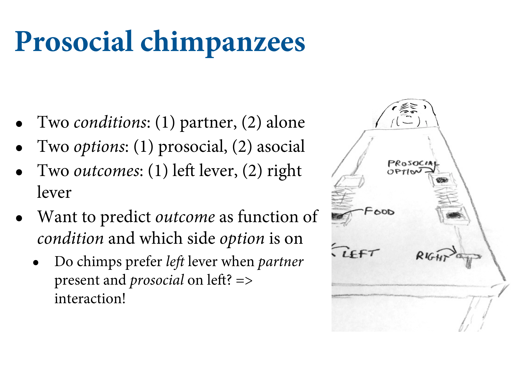
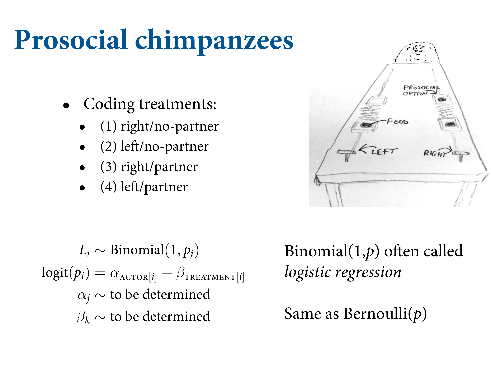
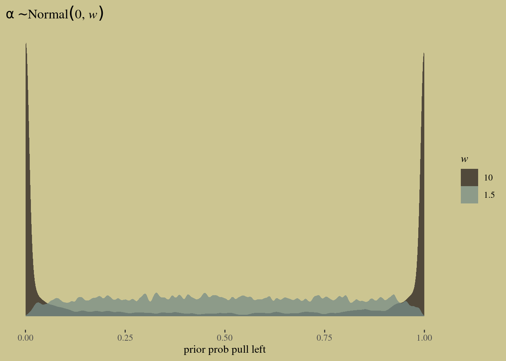
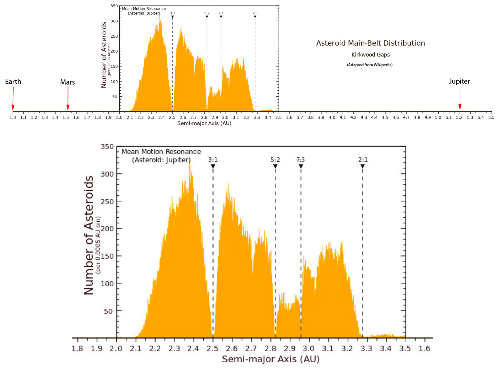
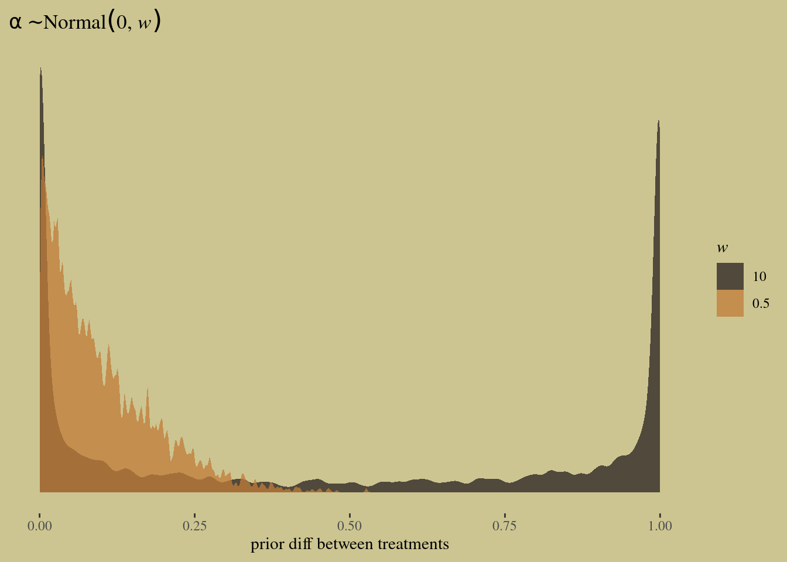
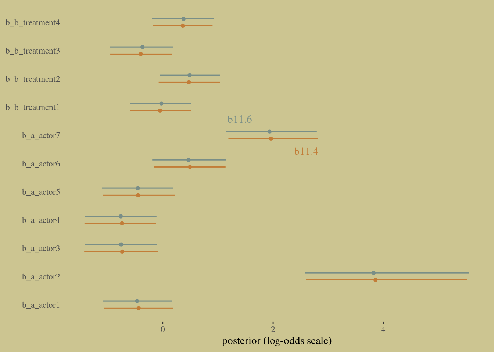
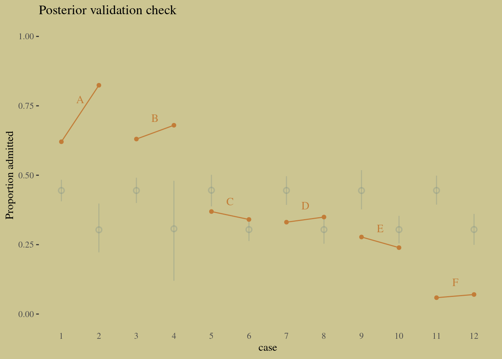
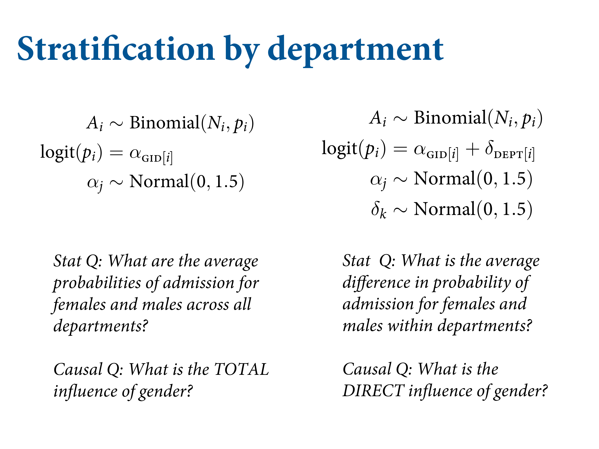
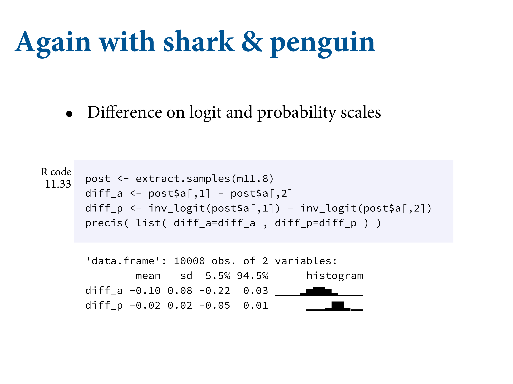

<!DOCTYPE html>
<html lang="" xml:lang="">
<head>

<meta charset="utf-8" />
<meta name="generator" content="pandoc" />
<meta name="viewport" content="width=device-width, initial-scale=1" />
<meta property="og:title" content="11.1 Binomial regression | Notes for Statistical Rethinking 2nd ed. by Richard McElreath" />
<meta property="og:type" content="book" />


<meta name="date" content="2021-12-04" />

<script type="text/x-mathjax-config">
MathJax.Hub.Config({
  TeX: { equationNumbers: { autoNumber: "AMS" } }
});
</script>
  <script src="https://cdn.jsdelivr.net/npm/mathjax@3/es5/tex-chtml-full.js" type="text/javascript"></script>

<meta name="description" content="11.1 Binomial regression | Notes for Statistical Rethinking 2nd ed. by Richard McElreath">

<title>11.1 Binomial regression | Notes for Statistical Rethinking 2nd ed. by Richard McElreath</title>

<script src="libs/header-attrs-2.10/header-attrs.js"></script>
<link href="libs/tufte-css-2015.12.29/tufte-fonts.css" rel="stylesheet" />
<link href="libs/tufte-css-2015.12.29/tufte-background.css" rel="stylesheet" />
<link href="libs/tufte-css-2015.12.29/tufte-italics.css" rel="stylesheet" />
<link href="libs/tufte-css-2015.12.29/tufte.css" rel="stylesheet" />
<link href="libs/tabwid-1.0.0/tabwid.css" rel="stylesheet" />
<script src="libs/htmlwidgets-1.5.3/htmlwidgets.js"></script>
<script src="libs/jquery-3.5.1/jquery.min.js"></script>
<link href="libs/datatables-css-0.0.0/datatables-crosstalk.css" rel="stylesheet" />
<script src="libs/datatables-binding-0.18/datatables.js"></script>
<link href="libs/dt-core-1.10.20/css/jquery.dataTables.min.css" rel="stylesheet" />
<link href="libs/dt-core-1.10.20/css/jquery.dataTables.extra.css" rel="stylesheet" />
<script src="libs/dt-core-1.10.20/js/jquery.dataTables.min.js"></script>
<link href="libs/crosstalk-1.1.1/css/crosstalk.css" rel="stylesheet" />
<script src="libs/crosstalk-1.1.1/js/crosstalk.min.js"></script>


<style type="text/css">code{white-space: pre;}</style>
<style type="text/css">
pre > code.sourceCode { white-space: pre; position: relative; }
pre > code.sourceCode > span { display: inline-block; line-height: 1.25; }
pre > code.sourceCode > span:empty { height: 1.2em; }
.sourceCode { overflow: visible; }
code.sourceCode > span { color: inherit; text-decoration: inherit; }
div.sourceCode { margin: 1em 0; }
pre.sourceCode { margin: 0; }
@media screen {
div.sourceCode { overflow: auto; }
}
@media print {
pre > code.sourceCode { white-space: pre-wrap; }
pre > code.sourceCode > span { text-indent: -5em; padding-left: 5em; }
}
pre.numberSource code
  { counter-reset: source-line 0; }
pre.numberSource code > span
  { position: relative; left: -4em; counter-increment: source-line; }
pre.numberSource code > span > a:first-child::before
  { content: counter(source-line);
    position: relative; left: -1em; text-align: right; vertical-align: baseline;
    border: none; display: inline-block;
    -webkit-touch-callout: none; -webkit-user-select: none;
    -khtml-user-select: none; -moz-user-select: none;
    -ms-user-select: none; user-select: none;
    padding: 0 4px; width: 4em;
    color: #aaaaaa;
  }
pre.numberSource { margin-left: 3em; border-left: 1px solid #aaaaaa;  padding-left: 4px; }
div.sourceCode
  {   }
@media screen {
pre > code.sourceCode > span > a:first-child::before { text-decoration: underline; }
}
code span.al { color: #ff0000; font-weight: bold; } /* Alert */
code span.an { color: #60a0b0; font-weight: bold; font-style: italic; } /* Annotation */
code span.at { color: #7d9029; } /* Attribute */
code span.bn { color: #40a070; } /* BaseN */
code span.bu { } /* BuiltIn */
code span.cf { color: #007020; font-weight: bold; } /* ControlFlow */
code span.ch { color: #4070a0; } /* Char */
code span.cn { color: #880000; } /* Constant */
code span.co { color: #60a0b0; font-style: italic; } /* Comment */
code span.cv { color: #60a0b0; font-weight: bold; font-style: italic; } /* CommentVar */
code span.do { color: #ba2121; font-style: italic; } /* Documentation */
code span.dt { color: #902000; } /* DataType */
code span.dv { color: #40a070; } /* DecVal */
code span.er { color: #ff0000; font-weight: bold; } /* Error */
code span.ex { } /* Extension */
code span.fl { color: #40a070; } /* Float */
code span.fu { color: #06287e; } /* Function */
code span.im { } /* Import */
code span.in { color: #60a0b0; font-weight: bold; font-style: italic; } /* Information */
code span.kw { color: #007020; font-weight: bold; } /* Keyword */
code span.op { color: #666666; } /* Operator */
code span.ot { color: #007020; } /* Other */
code span.pp { color: #bc7a00; } /* Preprocessor */
code span.sc { color: #4070a0; } /* SpecialChar */
code span.ss { color: #bb6688; } /* SpecialString */
code span.st { color: #4070a0; } /* String */
code span.va { color: #19177c; } /* Variable */
code span.vs { color: #4070a0; } /* VerbatimString */
code span.wa { color: #60a0b0; font-weight: bold; font-style: italic; } /* Warning */
</style>


<link rel="stylesheet" href="toc.css" type="text/css" />

</head>

<body>


<div class="row">
<div class="col-sm-12">
<div id="TOC">
<ul>
<li><a href="index.html#index">Index</a></li>
<li><a href="1-the-golem-of-prague.html#the-golem-of-prague"><span class="toc-section-number">1</span> The Golem of Prague</a></li>
<li class="has-sub"><a href="2-small-worlds-and-large-worlds.html#small-worlds-and-large-worlds"><span class="toc-section-number">2</span> Small Worlds and Large Worlds</a>
<ul>
<li><a href="2.1-the-garden-of-forking-data.html#the-garden-of-forking-data"><span class="toc-section-number">2.1</span> The garden of forking data</a></li>
<li><a href="2.2-building-a-model.html#building-a-model"><span class="toc-section-number">2.2</span> Building a model</a></li>
<li><a href="2.3-components-of-the-model.html#components-of-the-model"><span class="toc-section-number">2.3</span> Components of the model</a></li>
<li class="has-sub"><a href="2.4-making-the-model-go.html#making-the-model-go"><span class="toc-section-number">2.4</span> Making the model go</a>
<ul>
<li><a href="2.4-making-the-model-go.html#markov-chain-monte-carlo"><span class="toc-section-number">2.4.1</span> Markov chain Monte Carlo</a></li>
</ul></li>
</ul></li>
<li class="has-sub"><a href="3-sampling-from-the-imaginary.html#sampling-from-the-imaginary"><span class="toc-section-number">3</span> Sampling from the Imaginary</a>
<ul>
<li><a href="3.1-sampling-from-a-grid-approximate-posterior.html#sampling-from-a-grid-approximate-posterior"><span class="toc-section-number">3.1</span> Sampling from a grid-approximate posterior</a></li>
<li><a href="3.2-sampling-to-summarize.html#sampling-to-summarize"><span class="toc-section-number">3.2</span> Sampling to summarize</a></li>
<li><a href="3.3-sampling-to-simulate-prediction.html#sampling-to-simulate-prediction"><span class="toc-section-number">3.3</span> Sampling to simulate prediction</a></li>
<li><a href="3.4-lets-practice-with-brms.html#lets-practice-with-brms"><span class="toc-section-number">3.4</span> Let’s practice with brms</a></li>
<li><a href="practice.html#practice">Practice</a></li>
<li><a href="homework-week-1.html#homework-week-1">Homework: week 1</a></li>
</ul></li>
<li class="has-sub"><a href="4-geocentric-models.html#geocentric-models"><span class="toc-section-number">4</span> Geocentric Models</a>
<ul>
<li><a href="4.1-why-normal-distributions-are-normal.html#why-normal-distributions-are-normal"><span class="toc-section-number">4.1</span> Why normal distributions are normal</a></li>
<li><a href="4.2-a-language-for-describing-models.html#a-language-for-describing-models"><span class="toc-section-number">4.2</span> A language for describing models</a></li>
<li><a href="4.3-gaussian-model-of-height.html#gaussian-model-of-height"><span class="toc-section-number">4.3</span> Gaussian model of height</a></li>
<li><a href="4.4-linear-prediction.html#linear-prediction"><span class="toc-section-number">4.4</span> Linear prediction</a></li>
<li><a href="4.5-curves-from-lines.html#curves-from-lines"><span class="toc-section-number">4.5</span> Curves from lines</a></li>
<li><a href="4.6-practice-1.html#practice-1"><span class="toc-section-number">4.6</span> Practice</a></li>
</ul></li>
<li class="has-sub"><a href="5-the-many-variables-the-spurious-waffles.html#the-many-variables-the-spurious-waffles"><span class="toc-section-number">5</span> The Many Variables &amp; The Spurious Waffles</a>
<ul>
<li><a href="5.1-spurious-association.html#spurious-association"><span class="toc-section-number">5.1</span> Spurious association</a></li>
<li><a href="5.2-masked-relationship.html#masked-relationship"><span class="toc-section-number">5.2</span> Masked relationship</a></li>
<li><a href="5.3-categorical-variables.html#categorical-variables"><span class="toc-section-number">5.3</span> Categorical variables</a></li>
<li><a href="5.4-practice-2.html#practice-2"><span class="toc-section-number">5.4</span> Practice</a></li>
</ul></li>
<li class="has-sub"><a href="6-the-haunted-dag-the-causal-terror.html#the-haunted-dag-the-causal-terror"><span class="toc-section-number">6</span> The Haunted DAG &amp; The Causal Terror</a>
<ul>
<li><a href="6.1-multicollinearity.html#multicollinearity"><span class="toc-section-number">6.1</span> Multicollinearity</a></li>
<li><a href="6.2-post-treatment-bias.html#post-treatment-bias"><span class="toc-section-number">6.2</span> Post-treatment bias</a></li>
<li><a href="6.3-collider-bias.html#collider-bias"><span class="toc-section-number">6.3</span> Collider bias</a></li>
<li><a href="6.4-confronting-confounding.html#confronting-confounding"><span class="toc-section-number">6.4</span> Confronting confounding</a></li>
<li><a href="6.5-summary.html#summary"><span class="toc-section-number">6.5</span> Summary</a></li>
<li><a href="6.6-practice-3.html#practice-3"><span class="toc-section-number">6.6</span> Practice</a></li>
</ul></li>
<li class="has-sub"><a href="7-ulysses-compass.html#ulysses-compass"><span class="toc-section-number">7</span> Ulysses’ Compass</a>
<ul>
<li><a href="7.1-the-problem-with-parameters.html#the-problem-with-parameters"><span class="toc-section-number">7.1</span> The problem with parameters</a></li>
<li><a href="7.2-entropy-and-accuracy.html#entropy-and-accuracy"><span class="toc-section-number">7.2</span> Entropy and accuracy</a></li>
<li><a href="7.3-golem-taming-regularization.html#golem-taming-regularization"><span class="toc-section-number">7.3</span> Golem taming: regularization</a></li>
<li><a href="7.4-predicting-predictive-accuracy.html#predicting-predictive-accuracy"><span class="toc-section-number">7.4</span> Predicting predictive accuracy</a></li>
<li><a href="7.5-model-comparison.html#model-comparison"><span class="toc-section-number">7.5</span> Model comparison</a></li>
<li><a href="7.6-practice-4.html#practice-4"><span class="toc-section-number">7.6</span> Practice</a></li>
</ul></li>
<li class="has-sub"><a href="8-conditional-manatees.html#conditional-manatees"><span class="toc-section-number">8</span> Conditional Manatees</a>
<ul>
<li><a href="8.1-building-an-interaction.html#building-an-interaction"><span class="toc-section-number">8.1</span> Building an interaction</a></li>
<li><a href="8.2-symmetry-of-interactions.html#symmetry-of-interactions"><span class="toc-section-number">8.2</span> Symmetry of interactions</a></li>
<li><a href="8.3-continuous-interactions.html#continuous-interactions"><span class="toc-section-number">8.3</span> Continuous interactions</a></li>
</ul></li>
<li class="has-sub"><a href="9-markov-chain-monte-carlo-1.html#markov-chain-monte-carlo-1"><span class="toc-section-number">9</span> Markov Chain Monte Carlo</a>
<ul>
<li><a href="9.1-good-king-markov-and-his-island-kingdom.html#good-king-markov-and-his-island-kingdom"><span class="toc-section-number">9.1</span> Good King Markov and his island kingdom</a></li>
<li><a href="9.2-metropolis-algorithm.html#metropolis-algorithm"><span class="toc-section-number">9.2</span> Metropolis algorithm</a></li>
<li><a href="9.3-hamiltonian-monte-carlo.html#hamiltonian-monte-carlo"><span class="toc-section-number">9.3</span> Hamiltonian Monte Carlo</a></li>
<li><a href="9.4-easy-hmc-ulam.html#easy-hmc-ulam"><span class="toc-section-number">9.4</span> Easy HMC: <code>ulam</code></a></li>
<li><a href="9.5-care-and-feeding-of-your-markov-chain.html#care-and-feeding-of-your-markov-chain"><span class="toc-section-number">9.5</span> Care and feeding of your Markov chain</a></li>
</ul></li>
<li class="has-sub"><a href="10-big-entropy-and-the-generalized-linear-model.html#big-entropy-and-the-generalized-linear-model"><span class="toc-section-number">10</span> Big Entropy and the Generalized Linear Model</a>
<ul>
<li><a href="10.1-maximum-entropy.html#maximum-entropy"><span class="toc-section-number">10.1</span> Maximum entropy</a></li>
<li><a href="10.2-generalized-linear-models.html#generalized-linear-models"><span class="toc-section-number">10.2</span> Generalized linear models</a></li>
</ul></li>
<li class="has-sub"><a href="11-god-spiked-the-integers.html#god-spiked-the-integers"><span class="toc-section-number">11</span> God Spiked the Integers</a>
<ul>
<li><a href="11.1-binomial-regression.html#binomial-regression"><span class="toc-section-number">11.1</span> Binomial regression</a></li>
<li><a href="11.2-poisson-regression.html#poisson-regression"><span class="toc-section-number">11.2</span> Poisson regression</a></li>
<li><a href="11.3-multinomial-and-categorical-models.html#multinomial-and-categorical-models"><span class="toc-section-number">11.3</span> Multinomial and categorical models</a></li>
</ul></li>
<li class="has-sub"><a href="12-models-with-memory.html#models-with-memory"><span class="toc-section-number">12</span> Models With Memory</a>
<ul>
<li><a href="12.1-example-multilevel-tadpoles.html#example-multilevel-tadpoles"><span class="toc-section-number">12.1</span> Example: Multilevel tadpoles</a></li>
<li><a href="12.2-varying-effects-and-the-underfittingoverfitting-trade-off.html#varying-effects-and-the-underfittingoverfitting-trade-off"><span class="toc-section-number">12.2</span> Varying effects and the underfitting/overfitting trade-off</a></li>
<li><a href="12.3-more-than-one-type-of-cluster.html#more-than-one-type-of-cluster"><span class="toc-section-number">12.3</span> More than one type of cluster</a></li>
<li><a href="12.4-divergent-transitions-and-non-centered-priors.html#divergent-transitions-and-non-centered-priors"><span class="toc-section-number">12.4</span> Divergent transitions and non-centered priors</a></li>
<li><a href="12.5-multilevel-posterior-predictions.html#multilevel-posterior-predictions"><span class="toc-section-number">12.5</span> Multilevel posterior predictions</a></li>
</ul></li>
<li class="has-sub"><a href="13-adventures-in-covariance.html#adventures-in-covariance"><span class="toc-section-number">13</span> Adventures in Covariance</a>
<ul>
<li><a href="13.1-varying-slopes-by-construction.html#varying-slopes-by-construction"><span class="toc-section-number">13.1</span> Varying slopes by construction</a></li>
<li><a href="13.2-advanced-varying-slopes.html#advanced-varying-slopes"><span class="toc-section-number">13.2</span> Advanced varying slopes</a></li>
<li><a href="13.3-instruments-and-causal-designs.html#instruments-and-causal-designs"><span class="toc-section-number">13.3</span> Instruments and causal designs</a></li>
<li><a href="13.4-social-relations-as-correlated-varying-effects.html#social-relations-as-correlated-varying-effects"><span class="toc-section-number">13.4</span> Social relations as correlated varying effects</a></li>
<li><a href="13.5-continuous-categories-and-the-gaussian-process.html#continuous-categories-and-the-gaussian-process"><span class="toc-section-number">13.5</span> Continuous categories and the Gaussian process</a></li>
<li><a href="13.6-bonus-multilevel-growth-models-and-the-melsm.html#bonus-multilevel-growth-models-and-the-melsm"><span class="toc-section-number">13.6</span> Bonus: Multilevel growth models and the MELSM</a></li>
</ul></li>
<li class="has-sub"><a href="14-missing-data-and-other-opportunities.html#missing-data-and-other-opportunities"><span class="toc-section-number">14</span> Missing Data and Other Opportunities</a>
<ul>
<li><a href="14.1-measurement-error.html#measurement-error"><span class="toc-section-number">14.1</span> Measurement error</a></li>
<li><a href="14.2-missing-data.html#missing-data"><span class="toc-section-number">14.2</span> Missing data</a></li>
</ul></li>
</ul>
</div>
</div>
</div>
<div class="row">
<div class="col-sm-12">
<div id="binomial-regression" class="section level2" number="11.1">
<h2><span class="header-section-number">11.1</span> Binomial regression</h2>
<p>There are two common flavours of GLM that use binomial probability functions:</p>
<ol style="list-style-type: decimal">
<li><p><strong>Logistic regression</strong>: data are organized into single-trial cases, such that the outcome variable can only take values 0 and 1.</p></li>
<li><p><strong>Aggregated binomial regression</strong>: When individual trials with the same covariate values are instead aggregated together. In this case, the outcome can take the value zero or any positive integer up to n, the number of trials.</p></li>
</ol>
<p>Both flavors use the same logit link function.</p>
<p><strong><em>11.1.1. Logistic regression: Prosocial chimpanzees</em></strong></p>
<div class="figure">

<p class="caption marginnote shownote">
Example dataset. Imagine you’re a chimp on the close side. If you pull a lever, it’s expand out on both sides. There may or may not be food in both trays. If you pull the right, they other chimp will get the snack too. Interested in whetehr chimps care about this distinction. It’s not enough to do the experiment. They might pull the right because there’s more food there. One of the treatments is to remove the partner from the other end. Also chimpanzees are handed, so you have to adjust for that. BUt you want to know the differnce - do they pulll the prosocial option more if there’s a chimp on the other end.
</p>
</div>
<div class="sourceCode" id="cb740"><pre class="sourceCode r"><code class="sourceCode r"><span id="cb740-1"><a href="11.1-binomial-regression.html#cb740-1" aria-hidden="true" tabindex="-1"></a><span class="fu">data</span>(chimpanzees, <span class="at">package =</span> <span class="st">&quot;rethinking&quot;</span>)</span>
<span id="cb740-2"><a href="11.1-binomial-regression.html#cb740-2" aria-hidden="true" tabindex="-1"></a>d <span class="ot">&lt;-</span> chimpanzees</span>
<span id="cb740-3"><a href="11.1-binomial-regression.html#cb740-3" aria-hidden="true" tabindex="-1"></a><span class="fu">rm</span>(chimpanzees)</span>
<span id="cb740-4"><a href="11.1-binomial-regression.html#cb740-4" aria-hidden="true" tabindex="-1"></a></span>
<span id="cb740-5"><a href="11.1-binomial-regression.html#cb740-5" aria-hidden="true" tabindex="-1"></a>d <span class="sc">%&gt;%</span> </span>
<span id="cb740-6"><a href="11.1-binomial-regression.html#cb740-6" aria-hidden="true" tabindex="-1"></a>  <span class="fu">distinct</span>(prosoc_left, condition) <span class="sc">%&gt;%</span> </span>
<span id="cb740-7"><a href="11.1-binomial-regression.html#cb740-7" aria-hidden="true" tabindex="-1"></a>  <span class="fu">mutate</span>(<span class="at">description =</span> <span class="fu">c</span>(<span class="st">&quot;Two food items on right and no partner&quot;</span>,</span>
<span id="cb740-8"><a href="11.1-binomial-regression.html#cb740-8" aria-hidden="true" tabindex="-1"></a>                         <span class="st">&quot;Two food items on left and no partner&quot;</span>,</span>
<span id="cb740-9"><a href="11.1-binomial-regression.html#cb740-9" aria-hidden="true" tabindex="-1"></a>                         <span class="st">&quot;Two food items on right and partner present&quot;</span>,</span>
<span id="cb740-10"><a href="11.1-binomial-regression.html#cb740-10" aria-hidden="true" tabindex="-1"></a>                         <span class="st">&quot;Two food items on left and partner present&quot;</span>)) <span class="sc">%&gt;%</span> </span>
<span id="cb740-11"><a href="11.1-binomial-regression.html#cb740-11" aria-hidden="true" tabindex="-1"></a>  DT<span class="sc">::</span><span class="fu">datatable</span>()</span></code></pre></div>
<div id="htmlwidget-5eca4bd235090ce48432" style="width:100%;height:auto;" class="datatables html-widget"></div>
<script type="application/json" data-for="htmlwidget-5eca4bd235090ce48432">{"x":{"filter":"none","data":[["1","2","3","4"],[0,0,1,1],[0,1,0,1],["Two food items on right and no partner","Two food items on left and no partner","Two food items on right and partner present","Two food items on left and partner present"]],"container":"<table class=\"display\">\n  <thead>\n    <tr>\n      <th> <\/th>\n      <th>condition<\/th>\n      <th>prosoc_left<\/th>\n      <th>description<\/th>\n    <\/tr>\n  <\/thead>\n<\/table>","options":{"columnDefs":[{"className":"dt-right","targets":[1,2]},{"orderable":false,"targets":0}],"order":[],"autoWidth":false,"orderClasses":false}},"evals":[],"jsHooks":[]}</script>
<div class="figure">

<p class="caption marginnote shownote">
Alone with no other chimp. Prosocial and asocial option is balanced across left and right. We want to predict the outcome as a function of the condition -the total treatment.
</p>
</div>
<p>It would be conventional to include these two variables and their interaction using dummy variables. We’re going to follow McElreath and use an index variable approach.</p>
<div class="sourceCode" id="cb741"><pre class="sourceCode r"><code class="sourceCode r"><span id="cb741-1"><a href="11.1-binomial-regression.html#cb741-1" aria-hidden="true" tabindex="-1"></a>d <span class="ot">&lt;-</span></span>
<span id="cb741-2"><a href="11.1-binomial-regression.html#cb741-2" aria-hidden="true" tabindex="-1"></a>  d <span class="sc">%&gt;%</span> </span>
<span id="cb741-3"><a href="11.1-binomial-regression.html#cb741-3" aria-hidden="true" tabindex="-1"></a>  <span class="fu">mutate</span>(<span class="at">treatment =</span> <span class="fu">factor</span>(<span class="dv">1</span> <span class="sc">+</span> prosoc_left <span class="sc">+</span> <span class="dv">2</span> <span class="sc">*</span> condition)) <span class="sc">%&gt;%</span> </span>
<span id="cb741-4"><a href="11.1-binomial-regression.html#cb741-4" aria-hidden="true" tabindex="-1"></a>  <span class="co"># this will come in handy, later</span></span>
<span id="cb741-5"><a href="11.1-binomial-regression.html#cb741-5" aria-hidden="true" tabindex="-1"></a>  <span class="fu">mutate</span>(<span class="at">labels =</span> <span class="fu">factor</span>(treatment,</span>
<span id="cb741-6"><a href="11.1-binomial-regression.html#cb741-6" aria-hidden="true" tabindex="-1"></a>                         <span class="at">levels =</span> <span class="dv">1</span><span class="sc">:</span><span class="dv">4</span>,</span>
<span id="cb741-7"><a href="11.1-binomial-regression.html#cb741-7" aria-hidden="true" tabindex="-1"></a>                         <span class="at">labels =</span> <span class="fu">c</span>(<span class="st">&quot;r/n&quot;</span>, <span class="st">&quot;l/n&quot;</span>, <span class="st">&quot;r/p&quot;</span>, <span class="st">&quot;l/p&quot;</span>)))</span></code></pre></div>
<p>Now treatment contains the values 1 through 4, matching the numbers in the list above. You can verify by using cross-tabs:</p>
<div class="sourceCode" id="cb742"><pre class="sourceCode r"><code class="sourceCode r"><span id="cb742-1"><a href="11.1-binomial-regression.html#cb742-1" aria-hidden="true" tabindex="-1"></a>d <span class="sc">%&gt;%</span> </span>
<span id="cb742-2"><a href="11.1-binomial-regression.html#cb742-2" aria-hidden="true" tabindex="-1"></a>  <span class="fu">count</span>(condition, treatment, prosoc_left)</span></code></pre></div>
<pre><code>##   condition treatment prosoc_left   n
## 1         0         1           0 126
## 2         0         2           1 126
## 3         1         3           0 126
## 4         1         4           1 126</code></pre>
<div class="figure">

<p class="caption marginnote shownote">
Four possible distinct unordered treatments. Wnat to estimate the tendency to pull the lever. The linear model on teh left is the Binomial. <span class="math inline">\(lpha\)</span> measures handedness. Then we have a vector of four <span class="math inline">\(\beta\)</span> parameters$, one for each treatment. Note that the Bernoullli is just the Binomial with one trial.
</p>
</div>
<div class="figure">

<p class="caption marginnote shownote">
How to do priors? They behave in GLMs in very unpredictable ways. So need to do prior simulation. Let’s consider a skeletal verison of Bionmal regression where the linear model is some alpha, some intercept, the average log odds across all trials. What kind of prior to set on that. Let’s set a Gaussian. Centered on a half. But what about the scale? What happens when you pick <span class="math inline">\(\omega\)</span>.
</p>
</div>
<div class="figure">

<p class="caption marginnote shownote">
Let’s try with <span class="math inline">\(&#39;&#39;omega = 10\)</span>.
</p>
</div>
<p>We need to pick a value for <span class="math inline">\(\omega\)</span>. To emphasize the madness of conventional flat priors, let’s start with something rather flat, like <span class="math inline">\(\omega = 10\)</span>.</p>
<div class="sourceCode" id="cb744"><pre class="sourceCode r"><code class="sourceCode r"><span id="cb744-1"><a href="11.1-binomial-regression.html#cb744-1" aria-hidden="true" tabindex="-1"></a>b11<span class="fl">.1</span> <span class="ot">&lt;-</span></span>
<span id="cb744-2"><a href="11.1-binomial-regression.html#cb744-2" aria-hidden="true" tabindex="-1"></a>  brms<span class="sc">::</span><span class="fu">brm</span>(<span class="at">data =</span> d, </span>
<span id="cb744-3"><a href="11.1-binomial-regression.html#cb744-3" aria-hidden="true" tabindex="-1"></a>            <span class="at">family =</span> binomial,</span>
<span id="cb744-4"><a href="11.1-binomial-regression.html#cb744-4" aria-hidden="true" tabindex="-1"></a>            pulled_left <span class="sc">|</span> <span class="fu">trials</span>(<span class="dv">1</span>) <span class="sc">~</span> <span class="dv">1</span>,</span>
<span id="cb744-5"><a href="11.1-binomial-regression.html#cb744-5" aria-hidden="true" tabindex="-1"></a>            <span class="fu">prior</span>(<span class="fu">normal</span>(<span class="dv">0</span>, <span class="dv">10</span>), <span class="at">class =</span> Intercept),</span>
<span id="cb744-6"><a href="11.1-binomial-regression.html#cb744-6" aria-hidden="true" tabindex="-1"></a>            <span class="at">seed =</span> <span class="dv">11</span>,</span>
<span id="cb744-7"><a href="11.1-binomial-regression.html#cb744-7" aria-hidden="true" tabindex="-1"></a>            <span class="at">sample_prior =</span> T,</span>
<span id="cb744-8"><a href="11.1-binomial-regression.html#cb744-8" aria-hidden="true" tabindex="-1"></a>            <span class="at">file =</span> <span class="st">&quot;fits/b11.01&quot;</span>)</span></code></pre></div>
<div class="sourceCode" id="cb745"><pre class="sourceCode r"><code class="sourceCode r"><span id="cb745-1"><a href="11.1-binomial-regression.html#cb745-1" aria-hidden="true" tabindex="-1"></a><span class="fu">library</span>(wesanderson)</span>
<span id="cb745-2"><a href="11.1-binomial-regression.html#cb745-2" aria-hidden="true" tabindex="-1"></a><span class="fu">library</span>(ggthemes)</span>
<span id="cb745-3"><a href="11.1-binomial-regression.html#cb745-3" aria-hidden="true" tabindex="-1"></a></span>
<span id="cb745-4"><a href="11.1-binomial-regression.html#cb745-4" aria-hidden="true" tabindex="-1"></a><span class="fu">theme_set</span>(</span>
<span id="cb745-5"><a href="11.1-binomial-regression.html#cb745-5" aria-hidden="true" tabindex="-1"></a>  <span class="fu">theme_default</span>() <span class="sc">+</span> </span>
<span id="cb745-6"><a href="11.1-binomial-regression.html#cb745-6" aria-hidden="true" tabindex="-1"></a>    <span class="fu">theme_tufte</span>() <span class="sc">+</span></span>
<span id="cb745-7"><a href="11.1-binomial-regression.html#cb745-7" aria-hidden="true" tabindex="-1"></a>    <span class="fu">theme</span>(<span class="at">plot.background =</span> <span class="fu">element_rect</span>(<span class="at">fill =</span> <span class="fu">wes_palette</span>(<span class="st">&quot;Moonrise2&quot;</span>)[<span class="dv">3</span>],</span>
<span id="cb745-8"><a href="11.1-binomial-regression.html#cb745-8" aria-hidden="true" tabindex="-1"></a>                                         <span class="at">color =</span> <span class="fu">wes_palette</span>(<span class="st">&quot;Moonrise2&quot;</span>)[<span class="dv">3</span>]))</span>
<span id="cb745-9"><a href="11.1-binomial-regression.html#cb745-9" aria-hidden="true" tabindex="-1"></a>)</span></code></pre></div>
<p>Now let’s sample from the prior:</p>
<div class="sourceCode" id="cb746"><pre class="sourceCode r"><code class="sourceCode r"><span id="cb746-1"><a href="11.1-binomial-regression.html#cb746-1" aria-hidden="true" tabindex="-1"></a>brms<span class="sc">::</span><span class="fu">prior_samples</span>(b11<span class="fl">.1</span>) <span class="sc">%&gt;%</span> </span>
<span id="cb746-2"><a href="11.1-binomial-regression.html#cb746-2" aria-hidden="true" tabindex="-1"></a>  <span class="fu">mutate</span>(<span class="at">p =</span> <span class="fu">inv_logit_scaled</span>(Intercept)) <span class="sc">%&gt;%</span> </span>
<span id="cb746-3"><a href="11.1-binomial-regression.html#cb746-3" aria-hidden="true" tabindex="-1"></a>  </span>
<span id="cb746-4"><a href="11.1-binomial-regression.html#cb746-4" aria-hidden="true" tabindex="-1"></a>  <span class="fu">ggplot</span>(<span class="fu">aes</span>(<span class="at">x =</span> p)) <span class="sc">+</span></span>
<span id="cb746-5"><a href="11.1-binomial-regression.html#cb746-5" aria-hidden="true" tabindex="-1"></a>  <span class="fu">geom_density</span>(<span class="at">fill =</span> <span class="fu">wes_palette</span>(<span class="st">&quot;Moonrise2&quot;</span>)[<span class="dv">4</span>], </span>
<span id="cb746-6"><a href="11.1-binomial-regression.html#cb746-6" aria-hidden="true" tabindex="-1"></a>               <span class="at">size =</span> <span class="dv">0</span>, <span class="at">adjust =</span> <span class="fl">0.1</span>) <span class="sc">+</span></span>
<span id="cb746-7"><a href="11.1-binomial-regression.html#cb746-7" aria-hidden="true" tabindex="-1"></a>  <span class="fu">scale_y_continuous</span>(<span class="cn">NULL</span>, <span class="at">breaks =</span> <span class="cn">NULL</span>) <span class="sc">+</span></span>
<span id="cb746-8"><a href="11.1-binomial-regression.html#cb746-8" aria-hidden="true" tabindex="-1"></a>  <span class="fu">xlab</span>(<span class="st">&quot;prior prob pull left&quot;</span>)</span></code></pre></div>
<p></p>
<div class="sourceCode" id="cb747"><pre class="sourceCode r"><code class="sourceCode r"><span id="cb747-1"><a href="11.1-binomial-regression.html#cb747-1" aria-hidden="true" tabindex="-1"></a>b11<span class="fl">.1</span>b <span class="ot">&lt;-</span></span>
<span id="cb747-2"><a href="11.1-binomial-regression.html#cb747-2" aria-hidden="true" tabindex="-1"></a>  <span class="fu">brm</span>(<span class="at">data =</span> d, </span>
<span id="cb747-3"><a href="11.1-binomial-regression.html#cb747-3" aria-hidden="true" tabindex="-1"></a>      <span class="at">family =</span> binomial,</span>
<span id="cb747-4"><a href="11.1-binomial-regression.html#cb747-4" aria-hidden="true" tabindex="-1"></a>      pulled_left <span class="sc">|</span> <span class="fu">trials</span>(<span class="dv">1</span>) <span class="sc">~</span> <span class="dv">1</span>,</span>
<span id="cb747-5"><a href="11.1-binomial-regression.html#cb747-5" aria-hidden="true" tabindex="-1"></a>      <span class="fu">prior</span>(<span class="fu">normal</span>(<span class="dv">0</span>, <span class="fl">1.5</span>), <span class="at">class =</span> Intercept),</span>
<span id="cb747-6"><a href="11.1-binomial-regression.html#cb747-6" aria-hidden="true" tabindex="-1"></a>      <span class="at">seed =</span> <span class="dv">11</span>,</span>
<span id="cb747-7"><a href="11.1-binomial-regression.html#cb747-7" aria-hidden="true" tabindex="-1"></a>      <span class="at">sample_prior =</span> T,</span>
<span id="cb747-8"><a href="11.1-binomial-regression.html#cb747-8" aria-hidden="true" tabindex="-1"></a>      <span class="at">file =</span> <span class="st">&quot;fits/b11.01b&quot;</span>)</span></code></pre></div>
<p>One step remains. We need to convert the parameter to the outcome scale. This means using the INVERSE-LINK FUNCTION, as discussed in the previous chapter. In this case, the link function is logit, so the inverse link is <code>inv_logit</code>.</p>
<div class="sourceCode" id="cb748"><pre class="sourceCode r"><code class="sourceCode r"><span id="cb748-1"><a href="11.1-binomial-regression.html#cb748-1" aria-hidden="true" tabindex="-1"></a><span class="co"># wrangle</span></span>
<span id="cb748-2"><a href="11.1-binomial-regression.html#cb748-2" aria-hidden="true" tabindex="-1"></a><span class="fu">bind_rows</span>(brms<span class="sc">::</span><span class="fu">prior_samples</span>(b11<span class="fl">.1</span>),</span>
<span id="cb748-3"><a href="11.1-binomial-regression.html#cb748-3" aria-hidden="true" tabindex="-1"></a>          brms<span class="sc">::</span><span class="fu">prior_samples</span>(b11<span class="fl">.1</span>b)) <span class="sc">%&gt;%</span> </span>
<span id="cb748-4"><a href="11.1-binomial-regression.html#cb748-4" aria-hidden="true" tabindex="-1"></a>  <span class="fu">mutate</span>(<span class="at">p =</span> brms<span class="sc">::</span><span class="fu">inv_logit_scaled</span>(Intercept),</span>
<span id="cb748-5"><a href="11.1-binomial-regression.html#cb748-5" aria-hidden="true" tabindex="-1"></a>         <span class="at">w =</span> <span class="fu">factor</span>(<span class="fu">rep</span>(<span class="fu">c</span>(<span class="dv">10</span>, <span class="fl">1.5</span>), <span class="at">each =</span> <span class="fu">n</span>() <span class="sc">/</span> <span class="dv">2</span>),</span>
<span id="cb748-6"><a href="11.1-binomial-regression.html#cb748-6" aria-hidden="true" tabindex="-1"></a>                    <span class="at">levels =</span> <span class="fu">c</span>(<span class="dv">10</span>, <span class="fl">1.5</span>))) <span class="sc">%&gt;%</span> </span>
<span id="cb748-7"><a href="11.1-binomial-regression.html#cb748-7" aria-hidden="true" tabindex="-1"></a>  </span>
<span id="cb748-8"><a href="11.1-binomial-regression.html#cb748-8" aria-hidden="true" tabindex="-1"></a>  <span class="co"># plot</span></span>
<span id="cb748-9"><a href="11.1-binomial-regression.html#cb748-9" aria-hidden="true" tabindex="-1"></a>  <span class="fu">ggplot</span>(<span class="fu">aes</span>(<span class="at">x =</span> p, <span class="at">fill =</span> w)) <span class="sc">+</span></span>
<span id="cb748-10"><a href="11.1-binomial-regression.html#cb748-10" aria-hidden="true" tabindex="-1"></a>  <span class="fu">geom_density</span>(<span class="at">size =</span> <span class="dv">0</span>, <span class="at">alpha =</span> <span class="dv">3</span><span class="sc">/</span><span class="dv">4</span>, <span class="at">adjust =</span> <span class="fl">0.1</span>) <span class="sc">+</span></span>
<span id="cb748-11"><a href="11.1-binomial-regression.html#cb748-11" aria-hidden="true" tabindex="-1"></a>  <span class="fu">scale_fill_manual</span>(<span class="fu">expression</span>(<span class="fu">italic</span>(w)), <span class="at">values =</span> <span class="fu">wes_palette</span>(<span class="st">&quot;Moonrise2&quot;</span>)[<span class="fu">c</span>(<span class="dv">4</span>, <span class="dv">1</span>)]) <span class="sc">+</span></span>
<span id="cb748-12"><a href="11.1-binomial-regression.html#cb748-12" aria-hidden="true" tabindex="-1"></a>  <span class="fu">scale_y_continuous</span>(<span class="cn">NULL</span>, <span class="at">breaks =</span> <span class="cn">NULL</span>) <span class="sc">+</span></span>
<span id="cb748-13"><a href="11.1-binomial-regression.html#cb748-13" aria-hidden="true" tabindex="-1"></a>  <span class="fu">labs</span>(<span class="at">title =</span> <span class="fu">expression</span>(alpha<span class="sc">%~%</span><span class="fu">Normal</span>(<span class="dv">0</span><span class="sc">*</span><span class="st">&quot;, &quot;</span><span class="sc">*</span><span class="fu">italic</span>(w))),</span>
<span id="cb748-14"><a href="11.1-binomial-regression.html#cb748-14" aria-hidden="true" tabindex="-1"></a>       <span class="at">x =</span> <span class="st">&quot;prior prob pull left&quot;</span>)</span></code></pre></div>
<p></p>
<p>The model thinks, before it sees the data, that chimpanzees either never or always pull the left lever.</p>
<div class="figure">

<p class="caption marginnote shownote">
What happens is we have the prior proabability scale. THe black density curve is the prior where you assign alpha the normal 0,10. Because a Gaussian distribution has huge amount of mass beyond absolute 3. Most of the mass is outside the extremes. Because the range of the log-odds scale is -4,4. So when you change it to the probabilty scale, it puts a lot of probability in the tails. We can adopt this heuritsitc postiion of having something flat, which is normal with omega of 1.5
</p>
</div>
<hr />
<div class="sourceCode" id="cb749"><pre class="sourceCode r"><code class="sourceCode r"><span id="cb749-1"><a href="11.1-binomial-regression.html#cb749-1" aria-hidden="true" tabindex="-1"></a>slides_dir <span class="ot">=</span> here<span class="sc">::</span><span class="fu">here</span>(<span class="st">&quot;docs/slides/L12&quot;</span>)</span></code></pre></div>
<p></p>
<div class="figure">

<p class="caption marginnote shownote">
Some motivation. These are simulated fireflies. They synchronise their flashes. The whole forest will flash at once. They’re slowly synchroninising. Each is a clock, and when it hits 12 it flashes, but they turn their clocks forward each time a firefly near them flashes. That’s all that’s required to get perfect synchrony. Heartbeats do this. We’re stuyding discrete phenomena. And what’s interesting is that underneath they aren’t discrete. Just like the GLMs I’m teaching.
</p>
</div>
<div class="figure">

<p class="caption marginnote shownote">
Number of belts close together, like Saturn’s rings. There are significant gaps, and they occur at even integer ratios of Jupite’s orbits. It’s like God spiked the integers.
</p>
</div>
<div class="figure">

<p class="caption marginnote shownote">
Jupiter is like a large parent pushing you on a swing. It pushes asteroids out of orbit when it gets to push them at the same orbit at every time. When it’s not at some integer resonance, it’ll stay there to be found as an asteroid. Nature is full of discrete phenomena, but underneath they’re not discrete; they’re complicated.
</p>
</div>
<div class="figure">

<p class="caption marginnote shownote">
We turn to these models. To remind you, we’re processesing chimp lever-pulling data. We’re dealing with getting sinsible priors. Last time it was about slope. Now we’re also thinking about treatments. There are 4 treatments. Partner at the table or not, and whether the food is on the left or right. We want to measure unqiue log-odds for each of those. Flat prior on the logit scale is definitely not flat on the probability scale. Same problem for the treatment. For the prior predictives, we want to look at the distribution of differences.
</p>
</div>
<div class="sourceCode" id="cb750"><pre class="sourceCode r"><code class="sourceCode r"><span id="cb750-1"><a href="11.1-binomial-regression.html#cb750-1" aria-hidden="true" tabindex="-1"></a><span class="co"># w = 10</span></span>
<span id="cb750-2"><a href="11.1-binomial-regression.html#cb750-2" aria-hidden="true" tabindex="-1"></a>b11<span class="fl">.2</span> <span class="ot">&lt;-</span> </span>
<span id="cb750-3"><a href="11.1-binomial-regression.html#cb750-3" aria-hidden="true" tabindex="-1"></a>  <span class="fu">brm</span>(<span class="at">data =</span> d, </span>
<span id="cb750-4"><a href="11.1-binomial-regression.html#cb750-4" aria-hidden="true" tabindex="-1"></a>      <span class="at">family =</span> binomial,</span>
<span id="cb750-5"><a href="11.1-binomial-regression.html#cb750-5" aria-hidden="true" tabindex="-1"></a>      <span class="fu">bf</span>(pulled_left <span class="sc">|</span> <span class="fu">trials</span>(<span class="dv">1</span>) <span class="sc">~</span> a <span class="sc">+</span> b,</span>
<span id="cb750-6"><a href="11.1-binomial-regression.html#cb750-6" aria-hidden="true" tabindex="-1"></a>         a <span class="sc">~</span> <span class="dv">1</span>, </span>
<span id="cb750-7"><a href="11.1-binomial-regression.html#cb750-7" aria-hidden="true" tabindex="-1"></a>         b <span class="sc">~</span> <span class="dv">0</span> <span class="sc">+</span> treatment,</span>
<span id="cb750-8"><a href="11.1-binomial-regression.html#cb750-8" aria-hidden="true" tabindex="-1"></a>         <span class="at">nl =</span> <span class="cn">TRUE</span>),</span>
<span id="cb750-9"><a href="11.1-binomial-regression.html#cb750-9" aria-hidden="true" tabindex="-1"></a>      <span class="at">prior =</span> <span class="fu">c</span>(<span class="fu">prior</span>(<span class="fu">normal</span>(<span class="dv">0</span>, <span class="fl">1.5</span>), <span class="at">nlpar =</span> a),</span>
<span id="cb750-10"><a href="11.1-binomial-regression.html#cb750-10" aria-hidden="true" tabindex="-1"></a>                <span class="fu">prior</span>(<span class="fu">normal</span>(<span class="dv">0</span>, <span class="dv">10</span>), <span class="at">nlpar =</span> b, <span class="at">coef =</span> treatment1),</span>
<span id="cb750-11"><a href="11.1-binomial-regression.html#cb750-11" aria-hidden="true" tabindex="-1"></a>                <span class="fu">prior</span>(<span class="fu">normal</span>(<span class="dv">0</span>, <span class="dv">10</span>), <span class="at">nlpar =</span> b, <span class="at">coef =</span> treatment2),</span>
<span id="cb750-12"><a href="11.1-binomial-regression.html#cb750-12" aria-hidden="true" tabindex="-1"></a>                <span class="fu">prior</span>(<span class="fu">normal</span>(<span class="dv">0</span>, <span class="dv">10</span>), <span class="at">nlpar =</span> b, <span class="at">coef =</span> treatment3),</span>
<span id="cb750-13"><a href="11.1-binomial-regression.html#cb750-13" aria-hidden="true" tabindex="-1"></a>                <span class="fu">prior</span>(<span class="fu">normal</span>(<span class="dv">0</span>, <span class="dv">10</span>), <span class="at">nlpar =</span> b, <span class="at">coef =</span> treatment4)),</span>
<span id="cb750-14"><a href="11.1-binomial-regression.html#cb750-14" aria-hidden="true" tabindex="-1"></a>      <span class="at">iter =</span> <span class="dv">2000</span>, <span class="at">warmup =</span> <span class="dv">1000</span>, <span class="at">chains =</span> <span class="dv">4</span>, <span class="at">cores =</span> <span class="dv">4</span>,</span>
<span id="cb750-15"><a href="11.1-binomial-regression.html#cb750-15" aria-hidden="true" tabindex="-1"></a>      <span class="at">seed =</span> <span class="dv">11</span>,</span>
<span id="cb750-16"><a href="11.1-binomial-regression.html#cb750-16" aria-hidden="true" tabindex="-1"></a>      <span class="at">sample_prior =</span> T,</span>
<span id="cb750-17"><a href="11.1-binomial-regression.html#cb750-17" aria-hidden="true" tabindex="-1"></a>      <span class="at">file =</span> <span class="st">&quot;fits/b11.02&quot;</span>)</span>
<span id="cb750-18"><a href="11.1-binomial-regression.html#cb750-18" aria-hidden="true" tabindex="-1"></a></span>
<span id="cb750-19"><a href="11.1-binomial-regression.html#cb750-19" aria-hidden="true" tabindex="-1"></a><span class="co"># w = 0.5</span></span>
<span id="cb750-20"><a href="11.1-binomial-regression.html#cb750-20" aria-hidden="true" tabindex="-1"></a>b11<span class="fl">.3</span> <span class="ot">&lt;-</span> </span>
<span id="cb750-21"><a href="11.1-binomial-regression.html#cb750-21" aria-hidden="true" tabindex="-1"></a>  <span class="fu">brm</span>(<span class="at">data =</span> d, </span>
<span id="cb750-22"><a href="11.1-binomial-regression.html#cb750-22" aria-hidden="true" tabindex="-1"></a>      <span class="at">family =</span> binomial,</span>
<span id="cb750-23"><a href="11.1-binomial-regression.html#cb750-23" aria-hidden="true" tabindex="-1"></a>      <span class="fu">bf</span>(pulled_left <span class="sc">|</span> <span class="fu">trials</span>(<span class="dv">1</span>) <span class="sc">~</span> a <span class="sc">+</span> b,</span>
<span id="cb750-24"><a href="11.1-binomial-regression.html#cb750-24" aria-hidden="true" tabindex="-1"></a>         a <span class="sc">~</span> <span class="dv">1</span>, </span>
<span id="cb750-25"><a href="11.1-binomial-regression.html#cb750-25" aria-hidden="true" tabindex="-1"></a>         b <span class="sc">~</span> <span class="dv">0</span> <span class="sc">+</span> treatment,</span>
<span id="cb750-26"><a href="11.1-binomial-regression.html#cb750-26" aria-hidden="true" tabindex="-1"></a>         <span class="at">nl =</span> <span class="cn">TRUE</span>),</span>
<span id="cb750-27"><a href="11.1-binomial-regression.html#cb750-27" aria-hidden="true" tabindex="-1"></a>      <span class="at">prior =</span> <span class="fu">c</span>(<span class="fu">prior</span>(<span class="fu">normal</span>(<span class="dv">0</span>, <span class="fl">1.5</span>), <span class="at">nlpar =</span> a),</span>
<span id="cb750-28"><a href="11.1-binomial-regression.html#cb750-28" aria-hidden="true" tabindex="-1"></a>                <span class="fu">prior</span>(<span class="fu">normal</span>(<span class="dv">0</span>, <span class="fl">0.5</span>), <span class="at">nlpar =</span> b, <span class="at">coef =</span> treatment1),</span>
<span id="cb750-29"><a href="11.1-binomial-regression.html#cb750-29" aria-hidden="true" tabindex="-1"></a>                <span class="fu">prior</span>(<span class="fu">normal</span>(<span class="dv">0</span>, <span class="fl">0.5</span>), <span class="at">nlpar =</span> b, <span class="at">coef =</span> treatment2),</span>
<span id="cb750-30"><a href="11.1-binomial-regression.html#cb750-30" aria-hidden="true" tabindex="-1"></a>                <span class="fu">prior</span>(<span class="fu">normal</span>(<span class="dv">0</span>, <span class="fl">0.5</span>), <span class="at">nlpar =</span> b, <span class="at">coef =</span> treatment3),</span>
<span id="cb750-31"><a href="11.1-binomial-regression.html#cb750-31" aria-hidden="true" tabindex="-1"></a>                <span class="fu">prior</span>(<span class="fu">normal</span>(<span class="dv">0</span>, <span class="fl">0.5</span>), <span class="at">nlpar =</span> b, <span class="at">coef =</span> treatment4)),</span>
<span id="cb750-32"><a href="11.1-binomial-regression.html#cb750-32" aria-hidden="true" tabindex="-1"></a>      <span class="at">iter =</span> <span class="dv">2000</span>, <span class="at">warmup =</span> <span class="dv">1000</span>, <span class="at">chains =</span> <span class="dv">4</span>, <span class="at">cores =</span> <span class="dv">4</span>,</span>
<span id="cb750-33"><a href="11.1-binomial-regression.html#cb750-33" aria-hidden="true" tabindex="-1"></a>      <span class="at">seed =</span> <span class="dv">11</span>,</span>
<span id="cb750-34"><a href="11.1-binomial-regression.html#cb750-34" aria-hidden="true" tabindex="-1"></a>      <span class="at">sample_prior =</span> T,</span>
<span id="cb750-35"><a href="11.1-binomial-regression.html#cb750-35" aria-hidden="true" tabindex="-1"></a>      <span class="at">file =</span> <span class="st">&quot;fits/b11.03&quot;</span>)</span></code></pre></div>
<p>Plot the absolute prior difference between the first two treatments.</p>
<div class="sourceCode" id="cb751"><pre class="sourceCode r"><code class="sourceCode r"><span id="cb751-1"><a href="11.1-binomial-regression.html#cb751-1" aria-hidden="true" tabindex="-1"></a><span class="co"># wrangle</span></span>
<span id="cb751-2"><a href="11.1-binomial-regression.html#cb751-2" aria-hidden="true" tabindex="-1"></a>prior <span class="ot">&lt;-</span></span>
<span id="cb751-3"><a href="11.1-binomial-regression.html#cb751-3" aria-hidden="true" tabindex="-1"></a>  <span class="fu">bind_rows</span>(<span class="fu">prior_samples</span>(b11<span class="fl">.2</span>),</span>
<span id="cb751-4"><a href="11.1-binomial-regression.html#cb751-4" aria-hidden="true" tabindex="-1"></a>            <span class="fu">prior_samples</span>(b11<span class="fl">.3</span>)) <span class="sc">%&gt;%</span> </span>
<span id="cb751-5"><a href="11.1-binomial-regression.html#cb751-5" aria-hidden="true" tabindex="-1"></a>  <span class="fu">mutate</span>(<span class="at">w  =</span> <span class="fu">factor</span>(<span class="fu">rep</span>(<span class="fu">c</span>(<span class="dv">10</span>, <span class="fl">0.5</span>), <span class="at">each =</span> <span class="fu">n</span>() <span class="sc">/</span> <span class="dv">2</span>),</span>
<span id="cb751-6"><a href="11.1-binomial-regression.html#cb751-6" aria-hidden="true" tabindex="-1"></a>                     <span class="at">levels =</span> <span class="fu">c</span>(<span class="dv">10</span>, <span class="fl">0.5</span>)),</span>
<span id="cb751-7"><a href="11.1-binomial-regression.html#cb751-7" aria-hidden="true" tabindex="-1"></a>         <span class="at">p1 =</span> <span class="fu">inv_logit_scaled</span>(b_a <span class="sc">+</span> b_b_treatment1),</span>
<span id="cb751-8"><a href="11.1-binomial-regression.html#cb751-8" aria-hidden="true" tabindex="-1"></a>         <span class="at">p2 =</span> <span class="fu">inv_logit_scaled</span>(b_a <span class="sc">+</span> b_b_treatment2)) <span class="sc">%&gt;%</span> </span>
<span id="cb751-9"><a href="11.1-binomial-regression.html#cb751-9" aria-hidden="true" tabindex="-1"></a>  <span class="fu">mutate</span>(<span class="at">diff =</span> <span class="fu">abs</span>(p1 <span class="sc">-</span> p2)) </span>
<span id="cb751-10"><a href="11.1-binomial-regression.html#cb751-10" aria-hidden="true" tabindex="-1"></a></span>
<span id="cb751-11"><a href="11.1-binomial-regression.html#cb751-11" aria-hidden="true" tabindex="-1"></a><span class="co"># plot</span></span>
<span id="cb751-12"><a href="11.1-binomial-regression.html#cb751-12" aria-hidden="true" tabindex="-1"></a>prior <span class="sc">%&gt;%</span> </span>
<span id="cb751-13"><a href="11.1-binomial-regression.html#cb751-13" aria-hidden="true" tabindex="-1"></a>  <span class="fu">ggplot</span>(<span class="fu">aes</span>(<span class="at">x =</span> diff, <span class="at">fill =</span> w)) <span class="sc">+</span></span>
<span id="cb751-14"><a href="11.1-binomial-regression.html#cb751-14" aria-hidden="true" tabindex="-1"></a>  <span class="fu">geom_density</span>(<span class="at">size =</span> <span class="dv">0</span>, <span class="at">alpha =</span> <span class="dv">3</span><span class="sc">/</span><span class="dv">4</span>, <span class="at">adjust =</span> <span class="fl">0.1</span>) <span class="sc">+</span></span>
<span id="cb751-15"><a href="11.1-binomial-regression.html#cb751-15" aria-hidden="true" tabindex="-1"></a>  <span class="fu">scale_fill_manual</span>(<span class="fu">expression</span>(<span class="fu">italic</span>(w)), <span class="at">values =</span> <span class="fu">wes_palette</span>(<span class="st">&quot;Moonrise2&quot;</span>)[<span class="fu">c</span>(<span class="dv">4</span>, <span class="dv">2</span>)]) <span class="sc">+</span></span>
<span id="cb751-16"><a href="11.1-binomial-regression.html#cb751-16" aria-hidden="true" tabindex="-1"></a>  <span class="fu">scale_y_continuous</span>(<span class="cn">NULL</span>, <span class="at">breaks =</span> <span class="cn">NULL</span>) <span class="sc">+</span></span>
<span id="cb751-17"><a href="11.1-binomial-regression.html#cb751-17" aria-hidden="true" tabindex="-1"></a>  <span class="fu">labs</span>(<span class="at">title =</span> <span class="fu">expression</span>(alpha<span class="sc">%~%</span><span class="fu">Normal</span>(<span class="dv">0</span><span class="sc">*</span><span class="st">&quot;, &quot;</span><span class="sc">*</span><span class="fu">italic</span>(w))),</span>
<span id="cb751-18"><a href="11.1-binomial-regression.html#cb751-18" aria-hidden="true" tabindex="-1"></a>       <span class="at">x =</span> <span class="st">&quot;prior diff between treatments&quot;</span>)</span></code></pre></div>
<p></p>
<div class="figure">

<p class="caption marginnote shownote">
I’m using <code>rnorm</code> to sample some parameter values and look at some differences. Left is simulating the intercept alpha. A flat prior transformed to the probability scale it puts all the mass at 0 and 1, so we use 1.5. On the right we have the difference. The biggest difference is 1, smallest is 0. Again if you iuse something large on the logit scale, on the probability scale assumes that the treatments are either 0 or 1. We want it to reflect that the differences probably aren’t large. To be near 0 you need a tighter scale parameter.
</p>
</div>
<div class="figure">

<p class="caption marginnote shownote">
Ran four chains and here’s the summary. 7 chimp parameters and 4 treatment parameters. Each posterior mean is on the logit scale, so this is the log-odds handedness preference. Above 0 means they pull the left lever more than chance. You can see there’s a tendency for right-handedness. Chimp 2 knows what chimp 2 wants, which is the left lever.
</p>
</div>
<p>Let’s turn to Hamiltonian Monte Carlo to approximate the posterior, so you can get some practice with it.</p>
<p>Save <code>actor</code> as a factor:</p>
<div class="sourceCode" id="cb752"><pre class="sourceCode r"><code class="sourceCode r"><span id="cb752-1"><a href="11.1-binomial-regression.html#cb752-1" aria-hidden="true" tabindex="-1"></a>d <span class="ot">&lt;-</span></span>
<span id="cb752-2"><a href="11.1-binomial-regression.html#cb752-2" aria-hidden="true" tabindex="-1"></a>  d <span class="sc">%&gt;%</span> </span>
<span id="cb752-3"><a href="11.1-binomial-regression.html#cb752-3" aria-hidden="true" tabindex="-1"></a>  <span class="fu">mutate</span>(<span class="at">actor =</span> <span class="fu">factor</span>(actor))</span></code></pre></div>
<p>Now start the Markov chain. Add <code>log_lik=TRUE</code> to the call, so that <code>ulam</code> computes the values necessary for PSIS and WAIC.</p>
<div class="sourceCode" id="cb753"><pre class="sourceCode r"><code class="sourceCode r"><span id="cb753-1"><a href="11.1-binomial-regression.html#cb753-1" aria-hidden="true" tabindex="-1"></a>b11<span class="fl">.4</span> <span class="ot">&lt;-</span> </span>
<span id="cb753-2"><a href="11.1-binomial-regression.html#cb753-2" aria-hidden="true" tabindex="-1"></a>  <span class="fu">brm</span>(<span class="at">data =</span> d, </span>
<span id="cb753-3"><a href="11.1-binomial-regression.html#cb753-3" aria-hidden="true" tabindex="-1"></a>      <span class="at">family =</span> binomial,</span>
<span id="cb753-4"><a href="11.1-binomial-regression.html#cb753-4" aria-hidden="true" tabindex="-1"></a>      <span class="fu">bf</span>(pulled_left <span class="sc">|</span> <span class="fu">trials</span>(<span class="dv">1</span>) <span class="sc">~</span> a <span class="sc">+</span> b,</span>
<span id="cb753-5"><a href="11.1-binomial-regression.html#cb753-5" aria-hidden="true" tabindex="-1"></a>         a <span class="sc">~</span> <span class="dv">0</span> <span class="sc">+</span> actor, </span>
<span id="cb753-6"><a href="11.1-binomial-regression.html#cb753-6" aria-hidden="true" tabindex="-1"></a>         b <span class="sc">~</span> <span class="dv">0</span> <span class="sc">+</span> treatment,</span>
<span id="cb753-7"><a href="11.1-binomial-regression.html#cb753-7" aria-hidden="true" tabindex="-1"></a>         <span class="at">nl =</span> <span class="cn">TRUE</span>),</span>
<span id="cb753-8"><a href="11.1-binomial-regression.html#cb753-8" aria-hidden="true" tabindex="-1"></a>      <span class="at">prior =</span> <span class="fu">c</span>(<span class="fu">prior</span>(<span class="fu">normal</span>(<span class="dv">0</span>, <span class="fl">1.5</span>), <span class="at">nlpar =</span> a),</span>
<span id="cb753-9"><a href="11.1-binomial-regression.html#cb753-9" aria-hidden="true" tabindex="-1"></a>                <span class="fu">prior</span>(<span class="fu">normal</span>(<span class="dv">0</span>, <span class="fl">0.5</span>), <span class="at">nlpar =</span> b)),</span>
<span id="cb753-10"><a href="11.1-binomial-regression.html#cb753-10" aria-hidden="true" tabindex="-1"></a>      <span class="at">iter =</span> <span class="dv">2000</span>, <span class="at">warmup =</span> <span class="dv">1000</span>, <span class="at">chains =</span> <span class="dv">4</span>, <span class="at">cores =</span> <span class="dv">4</span>,</span>
<span id="cb753-11"><a href="11.1-binomial-regression.html#cb753-11" aria-hidden="true" tabindex="-1"></a>      <span class="at">seed =</span> <span class="dv">11</span>,</span>
<span id="cb753-12"><a href="11.1-binomial-regression.html#cb753-12" aria-hidden="true" tabindex="-1"></a>      <span class="at">file =</span> <span class="st">&quot;fits/b11.04&quot;</span>)</span></code></pre></div>
<div class="sourceCode" id="cb754"><pre class="sourceCode r"><code class="sourceCode r"><span id="cb754-1"><a href="11.1-binomial-regression.html#cb754-1" aria-hidden="true" tabindex="-1"></a><span class="fu">print</span>(b11<span class="fl">.4</span>)</span></code></pre></div>
<pre><code>##  Family: binomial 
##   Links: mu = logit 
## Formula: pulled_left | trials(1) ~ a + b 
##          a ~ 0 + actor
##          b ~ 0 + treatment
##    Data: d (Number of observations: 504) 
## Samples: 4 chains, each with iter = 2000; warmup = 1000; thin = 1;
##          total post-warmup samples = 4000
## 
## Population-Level Effects: 
##              Estimate Est.Error l-95% CI u-95% CI Rhat Bulk_ESS Tail_ESS
## a_actor1        -0.44      0.33    -1.06     0.19 1.00     1260     2039
## a_actor2         3.90      0.74     2.59     5.51 1.00     3768     2944
## a_actor3        -0.74      0.34    -1.42    -0.09 1.00     1341     2357
## a_actor4        -0.74      0.34    -1.42    -0.12 1.00     1352     2154
## a_actor5        -0.44      0.33    -1.08     0.22 1.00     1372     2550
## a_actor6         0.49      0.34    -0.16     1.14 1.00     1346     2499
## a_actor7         1.97      0.42     1.19     2.81 1.00     2023     2359
## b_treatment1    -0.05      0.28    -0.59     0.52 1.00     1195     2433
## b_treatment2     0.47      0.28    -0.07     1.04 1.00     1088     2249
## b_treatment3    -0.40      0.29    -0.95     0.17 1.00     1135     2196
## b_treatment4     0.36      0.28    -0.18     0.90 1.00     1062     2158
## 
## Samples were drawn using sampling(NUTS). For each parameter, Bulk_ESS
## and Tail_ESS are effective sample size measures, and Rhat is the potential
## scale reduction factor on split chains (at convergence, Rhat = 1).</code></pre>
<div class="figure">

<p class="caption marginnote shownote">
Let’s look at the individual difference parameters. Chimp 2 is ‘lefty’. He never pulled the right lever. The others have some more variation, with a slight tnedency for handedness. 7 has no preference. So handedness adds noise. It’s not technically a confound, but it makes measurement harder. Backdoor criterion doesn’t tell you to control for handedness. We don’t need it because this is an experiment.
</p>
</div>
<div class="sourceCode" id="cb756"><pre class="sourceCode r"><code class="sourceCode r"><span id="cb756-1"><a href="11.1-binomial-regression.html#cb756-1" aria-hidden="true" tabindex="-1"></a>post <span class="ot">&lt;-</span> brms<span class="sc">::</span><span class="fu">posterior_samples</span>(b11<span class="fl">.4</span>)</span>
<span id="cb756-2"><a href="11.1-binomial-regression.html#cb756-2" aria-hidden="true" tabindex="-1"></a></span>
<span id="cb756-3"><a href="11.1-binomial-regression.html#cb756-3" aria-hidden="true" tabindex="-1"></a>post <span class="sc">%&gt;%</span> </span>
<span id="cb756-4"><a href="11.1-binomial-regression.html#cb756-4" aria-hidden="true" tabindex="-1"></a>  <span class="fu">pivot_longer</span>(<span class="fu">contains</span>(<span class="st">&quot;actor&quot;</span>)) <span class="sc">%&gt;%</span></span>
<span id="cb756-5"><a href="11.1-binomial-regression.html#cb756-5" aria-hidden="true" tabindex="-1"></a>  <span class="fu">mutate</span>(<span class="at">probability =</span> brms<span class="sc">::</span><span class="fu">inv_logit_scaled</span>(value),</span>
<span id="cb756-6"><a href="11.1-binomial-regression.html#cb756-6" aria-hidden="true" tabindex="-1"></a>         <span class="at">actor       =</span> <span class="fu">factor</span>(<span class="fu">str_remove</span>(name, <span class="st">&quot;b_a_actor&quot;</span>),</span>
<span id="cb756-7"><a href="11.1-binomial-regression.html#cb756-7" aria-hidden="true" tabindex="-1"></a>                              <span class="at">levels =</span> <span class="dv">7</span><span class="sc">:</span><span class="dv">1</span>)) <span class="sc">%&gt;%</span> </span>
<span id="cb756-8"><a href="11.1-binomial-regression.html#cb756-8" aria-hidden="true" tabindex="-1"></a>  </span>
<span id="cb756-9"><a href="11.1-binomial-regression.html#cb756-9" aria-hidden="true" tabindex="-1"></a>  <span class="fu">ggplot</span>(<span class="fu">aes</span>(<span class="at">x =</span> probability, <span class="at">y =</span> actor)) <span class="sc">+</span></span>
<span id="cb756-10"><a href="11.1-binomial-regression.html#cb756-10" aria-hidden="true" tabindex="-1"></a>  <span class="fu">geom_vline</span>(<span class="at">xintercept =</span> .<span class="dv">5</span>, <span class="at">color =</span> <span class="fu">wes_palette</span>(<span class="st">&quot;Moonrise2&quot;</span>)[<span class="dv">1</span>], <span class="at">linetype =</span> <span class="dv">3</span>) <span class="sc">+</span></span>
<span id="cb756-11"><a href="11.1-binomial-regression.html#cb756-11" aria-hidden="true" tabindex="-1"></a>  tidybayes<span class="sc">::</span><span class="fu">stat_pointinterval</span>(<span class="at">.width =</span> .<span class="dv">95</span>, <span class="at">size =</span> <span class="dv">1</span><span class="sc">/</span><span class="dv">2</span>,</span>
<span id="cb756-12"><a href="11.1-binomial-regression.html#cb756-12" aria-hidden="true" tabindex="-1"></a>                     <span class="at">color =</span> <span class="fu">wes_palette</span>(<span class="st">&quot;Moonrise2&quot;</span>)[<span class="dv">4</span>]) <span class="sc">+</span></span>
<span id="cb756-13"><a href="11.1-binomial-regression.html#cb756-13" aria-hidden="true" tabindex="-1"></a>  <span class="fu">scale_x_continuous</span>(<span class="fu">expression</span>(alpha[actor]), <span class="at">limits =</span> <span class="dv">0</span><span class="sc">:</span><span class="dv">1</span>) <span class="sc">+</span></span>
<span id="cb756-14"><a href="11.1-binomial-regression.html#cb756-14" aria-hidden="true" tabindex="-1"></a>  <span class="fu">ylab</span>(<span class="cn">NULL</span>) <span class="sc">+</span></span>
<span id="cb756-15"><a href="11.1-binomial-regression.html#cb756-15" aria-hidden="true" tabindex="-1"></a>  <span class="fu">theme</span>(<span class="at">axis.ticks.y =</span> <span class="fu">element_blank</span>())</span></code></pre></div>
<p></p>
<div class="figure">

<p class="caption marginnote shownote">
N = no partner; P = partner. This is an example of how hard it is to figure out what happened in the experiment. The contrasts of interest are the interaction. We need them to choose the prosocial option more when there’s a parter on the other end, not just because there’s more food on that side. When the prosocial option is on the left, we’d expect higher estimates. For the other two treatments are on the right hand side, and they do, but there’s not much of an interaction effect. The side of the prosocial option has more effect, but not as much of the handedness.
</p>
</div>
<p>On the logit scale:</p>
<div class="sourceCode" id="cb757"><pre class="sourceCode r"><code class="sourceCode r"><span id="cb757-1"><a href="11.1-binomial-regression.html#cb757-1" aria-hidden="true" tabindex="-1"></a>tx <span class="ot">&lt;-</span> <span class="fu">c</span>(<span class="st">&quot;R/N&quot;</span>, <span class="st">&quot;L/N&quot;</span>, <span class="st">&quot;R/P&quot;</span>, <span class="st">&quot;L/P&quot;</span>)</span>
<span id="cb757-2"><a href="11.1-binomial-regression.html#cb757-2" aria-hidden="true" tabindex="-1"></a></span>
<span id="cb757-3"><a href="11.1-binomial-regression.html#cb757-3" aria-hidden="true" tabindex="-1"></a>post <span class="sc">%&gt;%</span> </span>
<span id="cb757-4"><a href="11.1-binomial-regression.html#cb757-4" aria-hidden="true" tabindex="-1"></a>  dplyr<span class="sc">::</span><span class="fu">select</span>(<span class="fu">contains</span>(<span class="st">&quot;treatment&quot;</span>)) <span class="sc">%&gt;%</span> </span>
<span id="cb757-5"><a href="11.1-binomial-regression.html#cb757-5" aria-hidden="true" tabindex="-1"></a>  <span class="fu">set_names</span>(<span class="st">&quot;R/N&quot;</span>,<span class="st">&quot;L/N&quot;</span>,<span class="st">&quot;R/P&quot;</span>,<span class="st">&quot;L/P&quot;</span>) <span class="sc">%&gt;%</span> </span>
<span id="cb757-6"><a href="11.1-binomial-regression.html#cb757-6" aria-hidden="true" tabindex="-1"></a>  <span class="fu">pivot_longer</span>(<span class="fu">everything</span>()) <span class="sc">%&gt;%</span></span>
<span id="cb757-7"><a href="11.1-binomial-regression.html#cb757-7" aria-hidden="true" tabindex="-1"></a>  <span class="fu">mutate</span>(<span class="at">probability =</span> brms<span class="sc">::</span><span class="fu">inv_logit_scaled</span>(value),</span>
<span id="cb757-8"><a href="11.1-binomial-regression.html#cb757-8" aria-hidden="true" tabindex="-1"></a>         <span class="at">treatment   =</span> <span class="fu">factor</span>(name, <span class="at">levels =</span> tx)) <span class="sc">%&gt;%</span> </span>
<span id="cb757-9"><a href="11.1-binomial-regression.html#cb757-9" aria-hidden="true" tabindex="-1"></a>  <span class="fu">mutate</span>(<span class="at">treatment =</span> <span class="fu">fct_rev</span>(treatment)) <span class="sc">%&gt;%</span> </span>
<span id="cb757-10"><a href="11.1-binomial-regression.html#cb757-10" aria-hidden="true" tabindex="-1"></a>  </span>
<span id="cb757-11"><a href="11.1-binomial-regression.html#cb757-11" aria-hidden="true" tabindex="-1"></a>  <span class="fu">ggplot</span>(<span class="fu">aes</span>(<span class="at">x =</span> value, <span class="at">y =</span> treatment)) <span class="sc">+</span></span>
<span id="cb757-12"><a href="11.1-binomial-regression.html#cb757-12" aria-hidden="true" tabindex="-1"></a>  <span class="fu">geom_vline</span>(<span class="at">xintercept =</span> <span class="dv">0</span>, <span class="at">color =</span> <span class="fu">wes_palette</span>(<span class="st">&quot;Moonrise2&quot;</span>)[<span class="dv">2</span>], <span class="at">linetype =</span> <span class="dv">3</span>) <span class="sc">+</span></span>
<span id="cb757-13"><a href="11.1-binomial-regression.html#cb757-13" aria-hidden="true" tabindex="-1"></a>  tidybayes<span class="sc">::</span><span class="fu">stat_pointinterval</span>(<span class="at">.width =</span> .<span class="dv">95</span>, <span class="at">size =</span> <span class="dv">1</span><span class="sc">/</span><span class="dv">2</span>,</span>
<span id="cb757-14"><a href="11.1-binomial-regression.html#cb757-14" aria-hidden="true" tabindex="-1"></a>                                <span class="at">color =</span> <span class="fu">wes_palette</span>(<span class="st">&quot;Moonrise2&quot;</span>)[<span class="dv">4</span>]) <span class="sc">+</span></span>
<span id="cb757-15"><a href="11.1-binomial-regression.html#cb757-15" aria-hidden="true" tabindex="-1"></a>  <span class="fu">labs</span>(<span class="at">x =</span> <span class="fu">expression</span>(beta[treatment]),</span>
<span id="cb757-16"><a href="11.1-binomial-regression.html#cb757-16" aria-hidden="true" tabindex="-1"></a>       <span class="at">y =</span> <span class="cn">NULL</span>) <span class="sc">+</span></span>
<span id="cb757-17"><a href="11.1-binomial-regression.html#cb757-17" aria-hidden="true" tabindex="-1"></a>  <span class="fu">theme</span>(<span class="at">axis.ticks.y =</span> <span class="fu">element_blank</span>())</span></code></pre></div>
<p></p>
<p>You can probably see already that there isn’t much evidence of prosocial intention in these data. But let’s calculate the differences between no-partner/partner and make sure.</p>
<div class="sourceCode" id="cb758"><pre class="sourceCode r"><code class="sourceCode r"><span id="cb758-1"><a href="11.1-binomial-regression.html#cb758-1" aria-hidden="true" tabindex="-1"></a>post <span class="sc">%&gt;%</span> </span>
<span id="cb758-2"><a href="11.1-binomial-regression.html#cb758-2" aria-hidden="true" tabindex="-1"></a>  <span class="fu">mutate</span>(<span class="at">db13 =</span> b_b_treatment1 <span class="sc">-</span> b_b_treatment3,</span>
<span id="cb758-3"><a href="11.1-binomial-regression.html#cb758-3" aria-hidden="true" tabindex="-1"></a>         <span class="at">db24 =</span> b_b_treatment2 <span class="sc">-</span> b_b_treatment4) <span class="sc">%&gt;%</span> </span>
<span id="cb758-4"><a href="11.1-binomial-regression.html#cb758-4" aria-hidden="true" tabindex="-1"></a>  <span class="fu">pivot_longer</span>(db13<span class="sc">:</span>db24) <span class="sc">%&gt;%</span></span>
<span id="cb758-5"><a href="11.1-binomial-regression.html#cb758-5" aria-hidden="true" tabindex="-1"></a>  <span class="fu">mutate</span>(<span class="at">diffs =</span> <span class="fu">factor</span>(name, <span class="at">levels =</span> <span class="fu">c</span>(<span class="st">&quot;db24&quot;</span>, <span class="st">&quot;db13&quot;</span>))) <span class="sc">%&gt;%</span> </span>
<span id="cb758-6"><a href="11.1-binomial-regression.html#cb758-6" aria-hidden="true" tabindex="-1"></a>  </span>
<span id="cb758-7"><a href="11.1-binomial-regression.html#cb758-7" aria-hidden="true" tabindex="-1"></a>  <span class="fu">ggplot</span>(<span class="fu">aes</span>(<span class="at">x =</span> value, <span class="at">y =</span> diffs)) <span class="sc">+</span></span>
<span id="cb758-8"><a href="11.1-binomial-regression.html#cb758-8" aria-hidden="true" tabindex="-1"></a>  <span class="fu">geom_vline</span>(<span class="at">xintercept =</span> <span class="dv">0</span>, <span class="at">color =</span> <span class="fu">wes_palette</span>(<span class="st">&quot;Moonrise2&quot;</span>)[<span class="dv">2</span>], <span class="at">linetype =</span> <span class="dv">3</span>) <span class="sc">+</span></span>
<span id="cb758-9"><a href="11.1-binomial-regression.html#cb758-9" aria-hidden="true" tabindex="-1"></a>  tidybayes<span class="sc">::</span><span class="fu">stat_pointinterval</span>(<span class="at">.width =</span> .<span class="dv">95</span>, <span class="at">size =</span> <span class="dv">1</span><span class="sc">/</span><span class="dv">2</span>,</span>
<span id="cb758-10"><a href="11.1-binomial-regression.html#cb758-10" aria-hidden="true" tabindex="-1"></a>                     <span class="at">color =</span> <span class="fu">wes_palette</span>(<span class="st">&quot;Moonrise2&quot;</span>)[<span class="dv">4</span>]) <span class="sc">+</span></span>
<span id="cb758-11"><a href="11.1-binomial-regression.html#cb758-11" aria-hidden="true" tabindex="-1"></a>  <span class="fu">labs</span>(<span class="at">x =</span> <span class="st">&quot;difference&quot;</span>,</span>
<span id="cb758-12"><a href="11.1-binomial-regression.html#cb758-12" aria-hidden="true" tabindex="-1"></a>       <span class="at">y =</span> <span class="cn">NULL</span>) <span class="sc">+</span></span>
<span id="cb758-13"><a href="11.1-binomial-regression.html#cb758-13" aria-hidden="true" tabindex="-1"></a>  <span class="fu">theme</span>(<span class="at">axis.ticks.y =</span> <span class="fu">element_blank</span>())</span></code></pre></div>
<p></p>
<p>Now let’s consider a posterior prediction check. Let’s summarize the proportions of left pulls for each actor in each treatment and then plot against the posterior predictions. First, to calculate the proportion in each combination of <code>actor</code> and <code>treatment</code>:</p>
<div class="sourceCode" id="cb759"><pre class="sourceCode r"><code class="sourceCode r"><span id="cb759-1"><a href="11.1-binomial-regression.html#cb759-1" aria-hidden="true" tabindex="-1"></a>d <span class="sc">%&gt;%</span></span>
<span id="cb759-2"><a href="11.1-binomial-regression.html#cb759-2" aria-hidden="true" tabindex="-1"></a>  <span class="fu">group_by</span>(actor, treatment) <span class="sc">%&gt;%</span></span>
<span id="cb759-3"><a href="11.1-binomial-regression.html#cb759-3" aria-hidden="true" tabindex="-1"></a>  <span class="fu">summarise</span>(<span class="at">proportion =</span> <span class="fu">mean</span>(pulled_left)) <span class="sc">%&gt;%</span> </span>
<span id="cb759-4"><a href="11.1-binomial-regression.html#cb759-4" aria-hidden="true" tabindex="-1"></a>  <span class="fu">filter</span>(actor <span class="sc">==</span> <span class="dv">1</span>)</span></code></pre></div>
<pre><code>## `summarise()` has grouped output by &#39;actor&#39;. You can override using the `.groups` argument.</code></pre>
<pre><code>## # A tibble: 4 × 3
## # Groups:   actor [1]
##   actor treatment proportion
##   &lt;fct&gt; &lt;fct&gt;          &lt;dbl&gt;
## 1 1     1              0.333
## 2 1     2              0.5  
## 3 1     3              0.278
## 4 1     4              0.556</code></pre>
<div class="figure">

<p class="caption marginnote shownote">
It’s much easier to just plot this stuff on the outcome scale. Just push the posterior distribution out through the model onto the prediction scale. This is the raw data, with some augmented lines. Each group is an actor, and I’ve taken all pulls and averaged them. The different treatment are points. Filled are partners. You can see that other than 2, they pull the left lever more when there is more food on that side. But the lines are pretty horizontal. If they titled more, you’d get a big change when you added a partner, but we don’t see that consistently. That’s the raw data.
</p>
</div>
<div class="figure">

<p class="caption marginnote shownote">
Now look at the posterior predictions. This is what it thinks. Sees that every chimp has the same partner effect. Can’t vary based on actor. If anything, adding a partner reduced the tendency to pull left. Look at actor 2’s predictions. The model is not sure that it would never pull it again. So even though the data has no variation in it, the model does. With 5-year-old kids, adding a partner changes everything.
</p>
</div>
<div class="sourceCode" id="cb762"><pre class="sourceCode r"><code class="sourceCode r"><span id="cb762-1"><a href="11.1-binomial-regression.html#cb762-1" aria-hidden="true" tabindex="-1"></a>p1 <span class="ot">&lt;-</span></span>
<span id="cb762-2"><a href="11.1-binomial-regression.html#cb762-2" aria-hidden="true" tabindex="-1"></a>  d <span class="sc">%&gt;%</span></span>
<span id="cb762-3"><a href="11.1-binomial-regression.html#cb762-3" aria-hidden="true" tabindex="-1"></a>  <span class="fu">group_by</span>(actor, treatment) <span class="sc">%&gt;%</span></span>
<span id="cb762-4"><a href="11.1-binomial-regression.html#cb762-4" aria-hidden="true" tabindex="-1"></a>  <span class="fu">summarise</span>(<span class="at">proportion =</span> <span class="fu">mean</span>(pulled_left)) <span class="sc">%&gt;%</span> </span>
<span id="cb762-5"><a href="11.1-binomial-regression.html#cb762-5" aria-hidden="true" tabindex="-1"></a>  <span class="fu">left_join</span>(d <span class="sc">%&gt;%</span> <span class="fu">distinct</span>(actor, treatment, labels, condition, prosoc_left),</span>
<span id="cb762-6"><a href="11.1-binomial-regression.html#cb762-6" aria-hidden="true" tabindex="-1"></a>            <span class="at">by =</span> <span class="fu">c</span>(<span class="st">&quot;actor&quot;</span>, <span class="st">&quot;treatment&quot;</span>)) <span class="sc">%&gt;%</span> </span>
<span id="cb762-7"><a href="11.1-binomial-regression.html#cb762-7" aria-hidden="true" tabindex="-1"></a>  <span class="fu">mutate</span>(<span class="at">condition =</span> <span class="fu">factor</span>(condition)) <span class="sc">%&gt;%</span> </span>
<span id="cb762-8"><a href="11.1-binomial-regression.html#cb762-8" aria-hidden="true" tabindex="-1"></a>  </span>
<span id="cb762-9"><a href="11.1-binomial-regression.html#cb762-9" aria-hidden="true" tabindex="-1"></a>  <span class="fu">ggplot</span>(<span class="fu">aes</span>(<span class="at">x =</span> labels, <span class="at">y =</span> proportion)) <span class="sc">+</span></span>
<span id="cb762-10"><a href="11.1-binomial-regression.html#cb762-10" aria-hidden="true" tabindex="-1"></a>  <span class="fu">geom_hline</span>(<span class="at">yintercept =</span> .<span class="dv">5</span>, <span class="at">color =</span> <span class="fu">wes_palette</span>(<span class="st">&quot;Moonrise2&quot;</span>)[<span class="dv">3</span>]) <span class="sc">+</span></span>
<span id="cb762-11"><a href="11.1-binomial-regression.html#cb762-11" aria-hidden="true" tabindex="-1"></a>  <span class="fu">geom_line</span>(<span class="fu">aes</span>(<span class="at">group =</span> prosoc_left),</span>
<span id="cb762-12"><a href="11.1-binomial-regression.html#cb762-12" aria-hidden="true" tabindex="-1"></a>            <span class="at">size =</span> <span class="dv">1</span><span class="sc">/</span><span class="dv">4</span>, <span class="at">color =</span> <span class="fu">wes_palette</span>(<span class="st">&quot;Moonrise2&quot;</span>)[<span class="dv">4</span>]) <span class="sc">+</span></span>
<span id="cb762-13"><a href="11.1-binomial-regression.html#cb762-13" aria-hidden="true" tabindex="-1"></a>  <span class="fu">geom_point</span>(<span class="fu">aes</span>(<span class="at">color =</span> condition),</span>
<span id="cb762-14"><a href="11.1-binomial-regression.html#cb762-14" aria-hidden="true" tabindex="-1"></a>             <span class="at">size =</span> <span class="fl">2.5</span>, <span class="at">show.legend =</span> F) <span class="sc">+</span> </span>
<span id="cb762-15"><a href="11.1-binomial-regression.html#cb762-15" aria-hidden="true" tabindex="-1"></a>  <span class="fu">labs</span>(<span class="at">subtitle =</span> <span class="st">&quot;observed proportions&quot;</span>)</span></code></pre></div>
<pre><code>## `summarise()` has grouped output by &#39;actor&#39;. You can override using the `.groups` argument.</code></pre>
<p>Compute the posterior predictions:</p>
<div class="sourceCode" id="cb764"><pre class="sourceCode r"><code class="sourceCode r"><span id="cb764-1"><a href="11.1-binomial-regression.html#cb764-1" aria-hidden="true" tabindex="-1"></a>nd <span class="ot">&lt;-</span> </span>
<span id="cb764-2"><a href="11.1-binomial-regression.html#cb764-2" aria-hidden="true" tabindex="-1"></a>  d <span class="sc">%&gt;%</span> </span>
<span id="cb764-3"><a href="11.1-binomial-regression.html#cb764-3" aria-hidden="true" tabindex="-1"></a>  <span class="fu">distinct</span>(actor, treatment, labels, condition, prosoc_left)</span>
<span id="cb764-4"><a href="11.1-binomial-regression.html#cb764-4" aria-hidden="true" tabindex="-1"></a></span>
<span id="cb764-5"><a href="11.1-binomial-regression.html#cb764-5" aria-hidden="true" tabindex="-1"></a>p2 <span class="ot">&lt;-</span></span>
<span id="cb764-6"><a href="11.1-binomial-regression.html#cb764-6" aria-hidden="true" tabindex="-1"></a>  <span class="fu">fitted</span>(b11<span class="fl">.4</span>,</span>
<span id="cb764-7"><a href="11.1-binomial-regression.html#cb764-7" aria-hidden="true" tabindex="-1"></a>         <span class="at">newdata =</span> nd) <span class="sc">%&gt;%</span> </span>
<span id="cb764-8"><a href="11.1-binomial-regression.html#cb764-8" aria-hidden="true" tabindex="-1"></a>  <span class="fu">data.frame</span>() <span class="sc">%&gt;%</span> </span>
<span id="cb764-9"><a href="11.1-binomial-regression.html#cb764-9" aria-hidden="true" tabindex="-1"></a>  <span class="fu">bind_cols</span>(nd) <span class="sc">%&gt;%</span> </span>
<span id="cb764-10"><a href="11.1-binomial-regression.html#cb764-10" aria-hidden="true" tabindex="-1"></a>  <span class="fu">mutate</span>(<span class="at">condition =</span> <span class="fu">factor</span>(condition)) <span class="sc">%&gt;%</span> </span>
<span id="cb764-11"><a href="11.1-binomial-regression.html#cb764-11" aria-hidden="true" tabindex="-1"></a>  </span>
<span id="cb764-12"><a href="11.1-binomial-regression.html#cb764-12" aria-hidden="true" tabindex="-1"></a>  <span class="fu">ggplot</span>(<span class="fu">aes</span>(<span class="at">x =</span> labels, <span class="at">y =</span> Estimate, <span class="at">ymin =</span> Q2<span class="fl">.5</span>, <span class="at">ymax =</span> Q97<span class="fl">.5</span>)) <span class="sc">+</span></span>
<span id="cb764-13"><a href="11.1-binomial-regression.html#cb764-13" aria-hidden="true" tabindex="-1"></a>  <span class="fu">geom_hline</span>(<span class="at">yintercept =</span> .<span class="dv">5</span>, <span class="at">color =</span> <span class="fu">wes_palette</span>(<span class="st">&quot;Moonrise2&quot;</span>)[<span class="dv">3</span>]) <span class="sc">+</span></span>
<span id="cb764-14"><a href="11.1-binomial-regression.html#cb764-14" aria-hidden="true" tabindex="-1"></a>  <span class="fu">geom_line</span>(<span class="fu">aes</span>(<span class="at">group =</span> prosoc_left),</span>
<span id="cb764-15"><a href="11.1-binomial-regression.html#cb764-15" aria-hidden="true" tabindex="-1"></a>            <span class="at">size =</span> <span class="dv">1</span><span class="sc">/</span><span class="dv">4</span>, <span class="at">color =</span> <span class="fu">wes_palette</span>(<span class="st">&quot;Moonrise2&quot;</span>)[<span class="dv">4</span>]) <span class="sc">+</span></span>
<span id="cb764-16"><a href="11.1-binomial-regression.html#cb764-16" aria-hidden="true" tabindex="-1"></a>  <span class="fu">geom_pointrange</span>(<span class="fu">aes</span>(<span class="at">color =</span> condition),</span>
<span id="cb764-17"><a href="11.1-binomial-regression.html#cb764-17" aria-hidden="true" tabindex="-1"></a>                  <span class="at">fatten =</span> <span class="fl">2.5</span>, <span class="at">show.legend =</span> F) <span class="sc">+</span> </span>
<span id="cb764-18"><a href="11.1-binomial-regression.html#cb764-18" aria-hidden="true" tabindex="-1"></a>  <span class="fu">labs</span>(<span class="at">subtitle =</span> <span class="st">&quot;posterior predictions&quot;</span>)</span>
<span id="cb764-19"><a href="11.1-binomial-regression.html#cb764-19" aria-hidden="true" tabindex="-1"></a></span>
<span id="cb764-20"><a href="11.1-binomial-regression.html#cb764-20" aria-hidden="true" tabindex="-1"></a><span class="co"># combine the two ggplots</span></span>
<span id="cb764-21"><a href="11.1-binomial-regression.html#cb764-21" aria-hidden="true" tabindex="-1"></a><span class="fu">library</span>(patchwork)</span>
<span id="cb764-22"><a href="11.1-binomial-regression.html#cb764-22" aria-hidden="true" tabindex="-1"></a></span>
<span id="cb764-23"><a href="11.1-binomial-regression.html#cb764-23" aria-hidden="true" tabindex="-1"></a>(p1 <span class="sc">/</span> p2) <span class="sc">&amp;</span></span>
<span id="cb764-24"><a href="11.1-binomial-regression.html#cb764-24" aria-hidden="true" tabindex="-1"></a>  <span class="fu">scale_color_manual</span>(<span class="at">values =</span> <span class="fu">wes_palette</span>(<span class="st">&quot;Moonrise2&quot;</span>)[<span class="fu">c</span>(<span class="dv">2</span><span class="sc">:</span><span class="dv">1</span>)]) <span class="sc">&amp;</span></span>
<span id="cb764-25"><a href="11.1-binomial-regression.html#cb764-25" aria-hidden="true" tabindex="-1"></a>  <span class="fu">scale_y_continuous</span>(<span class="st">&quot;proportion left lever&quot;</span>, </span>
<span id="cb764-26"><a href="11.1-binomial-regression.html#cb764-26" aria-hidden="true" tabindex="-1"></a>                     <span class="at">breaks =</span> <span class="fu">c</span>(<span class="dv">0</span>, .<span class="dv">5</span>, <span class="dv">1</span>), <span class="at">limits =</span> <span class="fu">c</span>(<span class="dv">0</span>, <span class="dv">1</span>)) <span class="sc">&amp;</span></span>
<span id="cb764-27"><a href="11.1-binomial-regression.html#cb764-27" aria-hidden="true" tabindex="-1"></a>  <span class="fu">xlab</span>(<span class="cn">NULL</span>) <span class="sc">&amp;</span></span>
<span id="cb764-28"><a href="11.1-binomial-regression.html#cb764-28" aria-hidden="true" tabindex="-1"></a>  <span class="fu">theme</span>(<span class="at">axis.ticks.x =</span> <span class="fu">element_blank</span>(),</span>
<span id="cb764-29"><a href="11.1-binomial-regression.html#cb764-29" aria-hidden="true" tabindex="-1"></a>        <span class="at">panel.background =</span> <span class="fu">element_rect</span>(<span class="at">fill =</span> <span class="fu">alpha</span>(<span class="st">&quot;white&quot;</span>, <span class="dv">1</span><span class="sc">/</span><span class="dv">10</span>), <span class="at">size =</span> <span class="dv">0</span>)) <span class="sc">&amp;</span></span>
<span id="cb764-30"><a href="11.1-binomial-regression.html#cb764-30" aria-hidden="true" tabindex="-1"></a>  <span class="fu">facet_wrap</span>(<span class="sc">~</span> actor, <span class="at">nrow =</span> <span class="dv">1</span>, <span class="at">labeller =</span> label_both)</span></code></pre></div>
<p></p>
<p>The model expects almost no change when adding a partner. Most of the variation in predictions comes from the actor intercepts. Handedness seems to be the big story of this experiment.</p>
<p>The data themselves show additional variation—some of the actors possibly respond more to the treatments than others do. We might consider a model that allows each unique actor to have unique treatment parameters. But we’ll leave such a model until we arrive at multilevel models, because we’ll need some additional tricks to do the model well.</p>
<p>Let’s confirm that a simpler model will do just fine, because there doesn’t seem to be any evidence of an interaction between location of the prosocial option and the presence of a partner.</p>
<p>To confirm this, here are the new index variables we’ll need:</p>
<div class="sourceCode" id="cb765"><pre class="sourceCode r"><code class="sourceCode r"><span id="cb765-1"><a href="11.1-binomial-regression.html#cb765-1" aria-hidden="true" tabindex="-1"></a>d <span class="ot">&lt;-</span></span>
<span id="cb765-2"><a href="11.1-binomial-regression.html#cb765-2" aria-hidden="true" tabindex="-1"></a>  d <span class="sc">%&gt;%</span> </span>
<span id="cb765-3"><a href="11.1-binomial-regression.html#cb765-3" aria-hidden="true" tabindex="-1"></a>  <span class="fu">mutate</span>(<span class="at">side =</span> <span class="fu">factor</span>(prosoc_left <span class="sc">+</span> <span class="dv">1</span>),  <span class="co"># right 1, left 2</span></span>
<span id="cb765-4"><a href="11.1-binomial-regression.html#cb765-4" aria-hidden="true" tabindex="-1"></a>         <span class="at">cond =</span> <span class="fu">factor</span>(condition <span class="sc">+</span> <span class="dv">1</span>))    <span class="co"># no partner 1, partner 2</span></span></code></pre></div>
<div class="figure">

<p class="caption marginnote shownote">
If you want to do model comparison, you’ll have to add this <code>log_lik</code> which computes the log probability of each observation. Once you hav those, they get spit out of the chain. Have to do it optionally because it can exhaust the memory on your computer. So if you don’t need it, don’t add it. Here I’m using <code>LOO</code> to compare. There’s no interaction because there’s no unique parameter for that. Now we can confirm that the interaction is not doing any work, because the models are the same on the prediction scale.
</p>
</div>
<div class="sourceCode" id="cb766"><pre class="sourceCode r"><code class="sourceCode r"><span id="cb766-1"><a href="11.1-binomial-regression.html#cb766-1" aria-hidden="true" tabindex="-1"></a>b11<span class="fl">.5</span> <span class="ot">&lt;-</span> </span>
<span id="cb766-2"><a href="11.1-binomial-regression.html#cb766-2" aria-hidden="true" tabindex="-1"></a>  <span class="fu">brm</span>(<span class="at">data =</span> d, </span>
<span id="cb766-3"><a href="11.1-binomial-regression.html#cb766-3" aria-hidden="true" tabindex="-1"></a>      <span class="at">family =</span> binomial,</span>
<span id="cb766-4"><a href="11.1-binomial-regression.html#cb766-4" aria-hidden="true" tabindex="-1"></a>      <span class="fu">bf</span>(pulled_left <span class="sc">|</span> <span class="fu">trials</span>(<span class="dv">1</span>) <span class="sc">~</span> a <span class="sc">+</span> bs <span class="sc">+</span> bc,</span>
<span id="cb766-5"><a href="11.1-binomial-regression.html#cb766-5" aria-hidden="true" tabindex="-1"></a>         a <span class="sc">~</span> <span class="dv">0</span> <span class="sc">+</span> actor, </span>
<span id="cb766-6"><a href="11.1-binomial-regression.html#cb766-6" aria-hidden="true" tabindex="-1"></a>         bs <span class="sc">~</span> <span class="dv">0</span> <span class="sc">+</span> side, </span>
<span id="cb766-7"><a href="11.1-binomial-regression.html#cb766-7" aria-hidden="true" tabindex="-1"></a>         bc <span class="sc">~</span> <span class="dv">0</span> <span class="sc">+</span> cond,</span>
<span id="cb766-8"><a href="11.1-binomial-regression.html#cb766-8" aria-hidden="true" tabindex="-1"></a>         <span class="at">nl =</span> <span class="cn">TRUE</span>),</span>
<span id="cb766-9"><a href="11.1-binomial-regression.html#cb766-9" aria-hidden="true" tabindex="-1"></a>      <span class="at">prior =</span> <span class="fu">c</span>(<span class="fu">prior</span>(<span class="fu">normal</span>(<span class="dv">0</span>, <span class="fl">1.5</span>), <span class="at">nlpar =</span> a),</span>
<span id="cb766-10"><a href="11.1-binomial-regression.html#cb766-10" aria-hidden="true" tabindex="-1"></a>                <span class="fu">prior</span>(<span class="fu">normal</span>(<span class="dv">0</span>, <span class="fl">0.5</span>), <span class="at">nlpar =</span> bs),</span>
<span id="cb766-11"><a href="11.1-binomial-regression.html#cb766-11" aria-hidden="true" tabindex="-1"></a>                <span class="fu">prior</span>(<span class="fu">normal</span>(<span class="dv">0</span>, <span class="fl">0.5</span>), <span class="at">nlpar =</span> bc)),</span>
<span id="cb766-12"><a href="11.1-binomial-regression.html#cb766-12" aria-hidden="true" tabindex="-1"></a>      <span class="at">iter =</span> <span class="dv">2000</span>, <span class="at">warmup =</span> <span class="dv">1000</span>, <span class="at">chains =</span> <span class="dv">4</span>, <span class="at">cores =</span> <span class="dv">4</span>,</span>
<span id="cb766-13"><a href="11.1-binomial-regression.html#cb766-13" aria-hidden="true" tabindex="-1"></a>      <span class="at">seed =</span> <span class="dv">11</span>,</span>
<span id="cb766-14"><a href="11.1-binomial-regression.html#cb766-14" aria-hidden="true" tabindex="-1"></a>      <span class="at">file =</span> <span class="st">&quot;fits/b11.05&quot;</span>)</span></code></pre></div>
<p>Comparing the two models with PSIS:</p>
<div class="sourceCode" id="cb767"><pre class="sourceCode r"><code class="sourceCode r"><span id="cb767-1"><a href="11.1-binomial-regression.html#cb767-1" aria-hidden="true" tabindex="-1"></a>b11<span class="fl">.4</span> <span class="ot">&lt;-</span> <span class="fu">add_criterion</span>(b11<span class="fl">.4</span>, <span class="fu">c</span>(<span class="st">&quot;loo&quot;</span>, <span class="st">&quot;waic&quot;</span>))</span>
<span id="cb767-2"><a href="11.1-binomial-regression.html#cb767-2" aria-hidden="true" tabindex="-1"></a>b11<span class="fl">.5</span> <span class="ot">&lt;-</span> <span class="fu">add_criterion</span>(b11<span class="fl">.5</span>, <span class="fu">c</span>(<span class="st">&quot;loo&quot;</span>, <span class="st">&quot;waic&quot;</span>))</span>
<span id="cb767-3"><a href="11.1-binomial-regression.html#cb767-3" aria-hidden="true" tabindex="-1"></a></span>
<span id="cb767-4"><a href="11.1-binomial-regression.html#cb767-4" aria-hidden="true" tabindex="-1"></a>brms<span class="sc">::</span><span class="fu">loo_compare</span>(b11<span class="fl">.4</span>, b11<span class="fl">.5</span>, <span class="at">criterion =</span> <span class="st">&quot;loo&quot;</span>) <span class="sc">%&gt;%</span> <span class="fu">print</span>(<span class="at">simplify =</span> F)</span></code></pre></div>
<pre><code>##       elpd_diff se_diff elpd_loo se_elpd_loo p_loo  se_p_loo looic  se_looic
## b11.5    0.0       0.0  -265.3      9.6         7.7    0.4    530.6   19.1  
## b11.4   -0.8       0.6  -266.1      9.5         8.5    0.4    532.2   19.0</code></pre>
<div class="sourceCode" id="cb769"><pre class="sourceCode r"><code class="sourceCode r"><span id="cb769-1"><a href="11.1-binomial-regression.html#cb769-1" aria-hidden="true" tabindex="-1"></a>brms<span class="sc">::</span><span class="fu">loo_compare</span>(b11<span class="fl">.4</span>, b11<span class="fl">.5</span>, <span class="at">criterion =</span> <span class="st">&quot;waic&quot;</span>) <span class="sc">%&gt;%</span> <span class="fu">print</span>(<span class="at">simplify =</span> F)</span></code></pre></div>
<pre><code>##       elpd_diff se_diff elpd_waic se_elpd_waic p_waic se_p_waic waic   se_waic
## b11.5    0.0       0.0  -265.3       9.6          7.7    0.4     530.6   19.1 
## b11.4   -0.8       0.6  -266.1       9.5          8.5    0.4     532.2   19.0</code></pre>
<div class="figure">

<p class="caption marginnote shownote">
You’ll get used to bionmial and logistical regression through examples. You can talk about effect scales in two different ways. And you need both. When you’re looking at differences between parameters on the log-odds scale, they’re relative. Why? Because you’re not talking about the probability of the event happening. But if you want to predict how it happens in the real world, then the base rate matters. That’s absolute. Something can seem really big when the absolute effect is small. The proportional odds adjustment is 0.9. So that’s 90% of the previous odds. If you switch the lever, you reduce the odds by 90%. The risk with this is that unimportant things can seem super important on the relative scale… because of base rate effects.
</p>
</div>
<div class="sourceCode" id="cb771"><pre class="sourceCode r"><code class="sourceCode r"><span id="cb771-1"><a href="11.1-binomial-regression.html#cb771-1" aria-hidden="true" tabindex="-1"></a>brms<span class="sc">::</span><span class="fu">model_weights</span>(b11<span class="fl">.4</span>, b11<span class="fl">.5</span>, <span class="at">weights =</span> <span class="st">&quot;loo&quot;</span>) <span class="sc">%&gt;%</span> <span class="fu">round</span>(<span class="at">digits =</span> <span class="dv">2</span>)</span></code></pre></div>
<pre><code>## b11.4 b11.5 
##  0.32  0.68</code></pre>
<div class="sourceCode" id="cb773"><pre class="sourceCode r"><code class="sourceCode r"><span id="cb773-1"><a href="11.1-binomial-regression.html#cb773-1" aria-hidden="true" tabindex="-1"></a>brms<span class="sc">::</span><span class="fu">model_weights</span>(b11<span class="fl">.4</span>, b11<span class="fl">.5</span>, <span class="at">weights =</span> <span class="st">&quot;waic&quot;</span>) <span class="sc">%&gt;%</span> <span class="fu">round</span>(<span class="at">digits =</span> <span class="dv">2</span>)</span></code></pre></div>
<pre><code>## b11.4 b11.5 
##  0.32  0.68</code></pre>
<div class="sourceCode" id="cb775"><pre class="sourceCode r"><code class="sourceCode r"><span id="cb775-1"><a href="11.1-binomial-regression.html#cb775-1" aria-hidden="true" tabindex="-1"></a><span class="fu">print</span>(b11<span class="fl">.5</span>)</span></code></pre></div>
<pre><code>##  Family: binomial 
##   Links: mu = logit 
## Formula: pulled_left | trials(1) ~ a + bs + bc 
##          a ~ 0 + actor
##          bs ~ 0 + side
##          bc ~ 0 + cond
##    Data: d (Number of observations: 504) 
## Samples: 4 chains, each with iter = 2000; warmup = 1000; thin = 1;
##          total post-warmup samples = 4000
## 
## Population-Level Effects: 
##          Estimate Est.Error l-95% CI u-95% CI Rhat Bulk_ESS Tail_ESS
## a_actor1    -0.63      0.45    -1.49     0.28 1.00     1276     1864
## a_actor2     3.72      0.78     2.31     5.38 1.00     2236     2356
## a_actor3    -0.94      0.46    -1.84    -0.06 1.00     1348     2115
## a_actor4    -0.94      0.46    -1.83    -0.05 1.00     1320     1932
## a_actor5    -0.64      0.45    -1.53     0.23 1.00     1343     2201
## a_actor6     0.30      0.45    -0.60     1.17 1.00     1374     2021
## a_actor7     1.78      0.52     0.74     2.81 1.00     1542     2339
## bs_side1    -0.20      0.34    -0.85     0.47 1.00     1377     2164
## bs_side2     0.49      0.33    -0.17     1.12 1.00     1333     1869
## bc_cond1     0.27      0.34    -0.38     0.94 1.00     1504     1963
## bc_cond2     0.03      0.33    -0.61     0.69 1.00     1577     2074
## 
## Samples were drawn using sampling(NUTS). For each parameter, Bulk_ESS
## and Tail_ESS are effective sample size measures, and Rhat is the potential
## scale reduction factor on split chains (at convergence, Rhat = 1).</code></pre>
<div class="sourceCode" id="cb777"><pre class="sourceCode r"><code class="sourceCode r"><span id="cb777-1"><a href="11.1-binomial-regression.html#cb777-1" aria-hidden="true" tabindex="-1"></a>brms<span class="sc">::</span><span class="fu">log_lik</span>(b11<span class="fl">.5</span>) <span class="sc">%&gt;%</span> <span class="fu">str</span>()</span></code></pre></div>
<pre><code>##  num [1:4000, 1:504] -0.417 -0.345 -0.499 -0.58 -0.669 ...
##  - attr(*, &quot;dimnames&quot;)=List of 2
##   ..$ : NULL
##   ..$ : NULL</code></pre>
<p>The log_lik matrix at the top contains all of the log-probabilities needed to calculate WAIC and PSIS.
Finally, we loop over the observations and calculate the binomial probability of each, conditional on the parameters.</p>
<p><strong><em>11.1.2. Relative shark and absolute deer</em></strong></p>
<div class="figure">

<p class="caption marginnote shownote">
The parable of absolute shark and relative penguin. This says don’t worry about sharks. Why is it easy to believe that more deer kill people than sharks? Because people aren’t aquatic. There’s an exposure effect. Each individual deer is less dangerous. THe absolute danger of a shark conditioning on the distibution of people acorss the earth is very small. But what if you’re a penguin? HTen the absolute risk is much larger.
</p>
</div>
<div class="figure">

<p class="caption marginnote shownote">
Relative effects are useful, but misused in epidemiological risk because it can make a very rare disease look dangerous when something you do doubles the risk. 3/4 of all lung cancer is cauised by smoking, but lung cancer is still very rare. MOst of the risk is from heart disease. But you really need relative effect to do cuasual inference to transfer results to things with different base rates. YOu need to think about both.
</p>
</div>
<div class="figure">

<p class="caption marginnote shownote">
We worry about lots of public health risks. Here’s a famous case from the UK. Study of the way that a pill could create blood clots. Turns out that on average they develop in the absence of the pill at 1/1000. (In reality more like 1/10000). Lots of women stopped taking birth control and got pregrant, wihicn is much more dangerous. THis happens whenever th econdition of interest has a really low baserate. A big change in relative risk doesn’t make a big absolute difference. But it does when the base rate is large.
</p>
</div>
<p>It is more common to see logistic regressions interpreted through RELATIVE EFFECTS. Relative effects are proportional changes in the odds of an outcome. If we change a variable and say the odds of an outcome double, then we are discussing relative effects. You can calculate these PROPORTIONAL ODDS relative effect sizes by simply exponentiating the parameter of interest. For example, to calculate the proportional odds of switching from treatment 2 to treatment 4 (adding a partner):</p>
<div class="sourceCode" id="cb779"><pre class="sourceCode r"><code class="sourceCode r"><span id="cb779-1"><a href="11.1-binomial-regression.html#cb779-1" aria-hidden="true" tabindex="-1"></a>brms<span class="sc">::</span><span class="fu">posterior_samples</span>(b11<span class="fl">.4</span>) <span class="sc">%&gt;%</span> </span>
<span id="cb779-2"><a href="11.1-binomial-regression.html#cb779-2" aria-hidden="true" tabindex="-1"></a>  <span class="fu">mutate</span>(<span class="at">proportional_odds =</span> <span class="fu">exp</span>(b_b_treatment4 <span class="sc">-</span> b_b_treatment2)) <span class="sc">%&gt;%</span> </span>
<span id="cb779-3"><a href="11.1-binomial-regression.html#cb779-3" aria-hidden="true" tabindex="-1"></a>  tidybayes<span class="sc">::</span><span class="fu">mean_qi</span>(proportional_odds)</span></code></pre></div>
<pre><code>## # A tibble: 1 × 6
##   proportional_odds .lower .upper .width .point .interval
##               &lt;dbl&gt;  &lt;dbl&gt;  &lt;dbl&gt;  &lt;dbl&gt; &lt;chr&gt;  &lt;chr&gt;    
## 1             0.929  0.521   1.54   0.95 mean   qi</code></pre>
<blockquote>
<p>On average, the switch multiplies the odds of pulling the left lever by 0.92, an 8% reduction in odds. This is what is meant by proportional odds. The new odds are calculated by taking the old odds and multiplying them by the proportional odds, which is 0.92 in this example. (p. 336)</p>
</blockquote>
<p><strong><em>11.1.3. Aggregated binomial: Chimpanzees again, condensed</em></strong></p>
<p>In the <code>chimpanzees</code> data context, the models all calculated the likelihood of observing either zero or one pulls of the left-hand lever. The models did so, because the data were organized such that each row describes the outcome of a single pull. But in principle the same data could be organized differently. As long as we don’t care about the order of the individual pulls, the same information is contained in a count of how many times each individual pulled the left-hand lever, for each combination of predictor variables.</p>
<p>For example, to calculate the number of times each chimpanzee pulled the left-hand lever, for each combination of predictor values:</p>
<div class="sourceCode" id="cb781"><pre class="sourceCode r"><code class="sourceCode r"><span id="cb781-1"><a href="11.1-binomial-regression.html#cb781-1" aria-hidden="true" tabindex="-1"></a>d_aggregated <span class="ot">&lt;-</span></span>
<span id="cb781-2"><a href="11.1-binomial-regression.html#cb781-2" aria-hidden="true" tabindex="-1"></a>  d <span class="sc">%&gt;%</span></span>
<span id="cb781-3"><a href="11.1-binomial-regression.html#cb781-3" aria-hidden="true" tabindex="-1"></a>  <span class="fu">group_by</span>(treatment, actor, side, cond) <span class="sc">%&gt;%</span></span>
<span id="cb781-4"><a href="11.1-binomial-regression.html#cb781-4" aria-hidden="true" tabindex="-1"></a>  <span class="fu">summarise</span>(<span class="at">left_pulls =</span> <span class="fu">sum</span>(pulled_left)) <span class="sc">%&gt;%</span> </span>
<span id="cb781-5"><a href="11.1-binomial-regression.html#cb781-5" aria-hidden="true" tabindex="-1"></a>  <span class="fu">ungroup</span>()</span></code></pre></div>
<pre><code>## `summarise()` has grouped output by &#39;treatment&#39;, &#39;actor&#39;, &#39;side&#39;. You can override using the `.groups` argument.</code></pre>
<div class="sourceCode" id="cb783"><pre class="sourceCode r"><code class="sourceCode r"><span id="cb783-1"><a href="11.1-binomial-regression.html#cb783-1" aria-hidden="true" tabindex="-1"></a>d_aggregated <span class="sc">%&gt;%</span></span>
<span id="cb783-2"><a href="11.1-binomial-regression.html#cb783-2" aria-hidden="true" tabindex="-1"></a>  <span class="fu">head</span>(<span class="at">n =</span> <span class="dv">8</span>)</span></code></pre></div>
<pre><code>## # A tibble: 8 × 5
##   treatment actor side  cond  left_pulls
##   &lt;fct&gt;     &lt;fct&gt; &lt;fct&gt; &lt;fct&gt;      &lt;int&gt;
## 1 1         1     1     1              6
## 2 1         2     1     1             18
## 3 1         3     1     1              5
## 4 1         4     1     1              6
## 5 1         5     1     1              6
## 6 1         6     1     1             14
## 7 1         7     1     1             14
## 8 2         1     2     1              9</code></pre>
<div class="sourceCode" id="cb785"><pre class="sourceCode r"><code class="sourceCode r"><span id="cb785-1"><a href="11.1-binomial-regression.html#cb785-1" aria-hidden="true" tabindex="-1"></a>b11<span class="fl">.6</span> <span class="ot">&lt;-</span> </span>
<span id="cb785-2"><a href="11.1-binomial-regression.html#cb785-2" aria-hidden="true" tabindex="-1"></a>  <span class="fu">brm</span>(<span class="at">data =</span> d_aggregated, </span>
<span id="cb785-3"><a href="11.1-binomial-regression.html#cb785-3" aria-hidden="true" tabindex="-1"></a>      <span class="at">family =</span> binomial,</span>
<span id="cb785-4"><a href="11.1-binomial-regression.html#cb785-4" aria-hidden="true" tabindex="-1"></a>      <span class="fu">bf</span>(left_pulls <span class="sc">|</span> <span class="fu">trials</span>(<span class="dv">18</span>) <span class="sc">~</span> a <span class="sc">+</span> b,</span>
<span id="cb785-5"><a href="11.1-binomial-regression.html#cb785-5" aria-hidden="true" tabindex="-1"></a>         a <span class="sc">~</span> <span class="dv">0</span> <span class="sc">+</span> actor, </span>
<span id="cb785-6"><a href="11.1-binomial-regression.html#cb785-6" aria-hidden="true" tabindex="-1"></a>         b <span class="sc">~</span> <span class="dv">0</span> <span class="sc">+</span> treatment,</span>
<span id="cb785-7"><a href="11.1-binomial-regression.html#cb785-7" aria-hidden="true" tabindex="-1"></a>         <span class="at">nl =</span> <span class="cn">TRUE</span>),</span>
<span id="cb785-8"><a href="11.1-binomial-regression.html#cb785-8" aria-hidden="true" tabindex="-1"></a>      <span class="at">prior =</span> <span class="fu">c</span>(<span class="fu">prior</span>(<span class="fu">normal</span>(<span class="dv">0</span>, <span class="fl">1.5</span>), <span class="at">nlpar =</span> a),</span>
<span id="cb785-9"><a href="11.1-binomial-regression.html#cb785-9" aria-hidden="true" tabindex="-1"></a>                <span class="fu">prior</span>(<span class="fu">normal</span>(<span class="dv">0</span>, <span class="fl">0.5</span>), <span class="at">nlpar =</span> b)),</span>
<span id="cb785-10"><a href="11.1-binomial-regression.html#cb785-10" aria-hidden="true" tabindex="-1"></a>      <span class="at">iter =</span> <span class="dv">2000</span>, <span class="at">warmup =</span> <span class="dv">1000</span>, <span class="at">chains =</span> <span class="dv">4</span>, <span class="at">cores =</span> <span class="dv">4</span>,</span>
<span id="cb785-11"><a href="11.1-binomial-regression.html#cb785-11" aria-hidden="true" tabindex="-1"></a>      <span class="at">seed =</span> <span class="dv">11</span>,</span>
<span id="cb785-12"><a href="11.1-binomial-regression.html#cb785-12" aria-hidden="true" tabindex="-1"></a>      <span class="at">file =</span> <span class="st">&quot;fits/b11.06&quot;</span>)</span></code></pre></div>
<div class="sourceCode" id="cb786"><pre class="sourceCode r"><code class="sourceCode r"><span id="cb786-1"><a href="11.1-binomial-regression.html#cb786-1" aria-hidden="true" tabindex="-1"></a><span class="fu">print</span>(b11<span class="fl">.6</span>)</span></code></pre></div>
<pre><code>##  Family: binomial 
##   Links: mu = logit 
## Formula: left_pulls | trials(18) ~ a + b 
##          a ~ 0 + actor
##          b ~ 0 + treatment
##    Data: d_aggregated (Number of observations: 28) 
## Samples: 4 chains, each with iter = 2000; warmup = 1000; thin = 1;
##          total post-warmup samples = 4000
## 
## Population-Level Effects: 
##              Estimate Est.Error l-95% CI u-95% CI Rhat Bulk_ESS Tail_ESS
## a_actor1        -0.46      0.32    -1.09     0.17 1.00     1222     1894
## a_actor2         3.88      0.74     2.57     5.56 1.00     3309     2485
## a_actor3        -0.76      0.33    -1.41    -0.11 1.00     1344     2078
## a_actor4        -0.76      0.33    -1.41    -0.11 1.00     1108     1990
## a_actor5        -0.45      0.33    -1.10     0.19 1.00     1097     1833
## a_actor6         0.47      0.34    -0.19     1.15 1.00     1107     2113
## a_actor7         1.95      0.42     1.14     2.79 1.00     1981     2851
## b_treatment1    -0.03      0.29    -0.59     0.52 1.00      987     1883
## b_treatment2     0.49      0.28    -0.06     1.04 1.00     1073     1985
## b_treatment3    -0.37      0.29    -0.95     0.19 1.00     1078     2015
## b_treatment4     0.37      0.28    -0.20     0.92 1.00     1096     1851
## 
## Samples were drawn using sampling(NUTS). For each parameter, Bulk_ESS
## and Tail_ESS are effective sample size measures, and Rhat is the potential
## scale reduction factor on split chains (at convergence, Rhat = 1).</code></pre>
<div class="sourceCode" id="cb788"><pre class="sourceCode r"><code class="sourceCode r"><span id="cb788-1"><a href="11.1-binomial-regression.html#cb788-1" aria-hidden="true" tabindex="-1"></a><span class="co"># this is just for fancy annotation</span></span>
<span id="cb788-2"><a href="11.1-binomial-regression.html#cb788-2" aria-hidden="true" tabindex="-1"></a>text <span class="ot">&lt;-</span></span>
<span id="cb788-3"><a href="11.1-binomial-regression.html#cb788-3" aria-hidden="true" tabindex="-1"></a>  <span class="fu">tibble</span>(<span class="at">value =</span> <span class="fu">c</span>(<span class="fl">1.4</span>, <span class="fl">2.6</span>),</span>
<span id="cb788-4"><a href="11.1-binomial-regression.html#cb788-4" aria-hidden="true" tabindex="-1"></a>         <span class="at">name  =</span> <span class="st">&quot;b_a_actor7&quot;</span>,</span>
<span id="cb788-5"><a href="11.1-binomial-regression.html#cb788-5" aria-hidden="true" tabindex="-1"></a>         <span class="at">fit   =</span> <span class="fu">c</span>(<span class="st">&quot;b11.6&quot;</span>, <span class="st">&quot;b11.4&quot;</span>))</span>
<span id="cb788-6"><a href="11.1-binomial-regression.html#cb788-6" aria-hidden="true" tabindex="-1"></a></span>
<span id="cb788-7"><a href="11.1-binomial-regression.html#cb788-7" aria-hidden="true" tabindex="-1"></a><span class="co"># rope in the posterior draws and wrangle</span></span>
<span id="cb788-8"><a href="11.1-binomial-regression.html#cb788-8" aria-hidden="true" tabindex="-1"></a><span class="fu">bind_rows</span>(brms<span class="sc">::</span><span class="fu">posterior_samples</span>(b11<span class="fl">.4</span>),</span>
<span id="cb788-9"><a href="11.1-binomial-regression.html#cb788-9" aria-hidden="true" tabindex="-1"></a>          brms<span class="sc">::</span><span class="fu">posterior_samples</span>(b11<span class="fl">.6</span>)) <span class="sc">%&gt;%</span> </span>
<span id="cb788-10"><a href="11.1-binomial-regression.html#cb788-10" aria-hidden="true" tabindex="-1"></a>  <span class="fu">mutate</span>(<span class="at">fit =</span> <span class="fu">rep</span>(<span class="fu">c</span>(<span class="st">&quot;b11.4&quot;</span>, <span class="st">&quot;b11.6&quot;</span>), <span class="at">each =</span> <span class="fu">n</span>() <span class="sc">/</span> <span class="dv">2</span>)) <span class="sc">%&gt;%</span> </span>
<span id="cb788-11"><a href="11.1-binomial-regression.html#cb788-11" aria-hidden="true" tabindex="-1"></a>  <span class="fu">pivot_longer</span>(b_a_actor1<span class="sc">:</span>b_b_treatment4) <span class="sc">%&gt;%</span> </span>
<span id="cb788-12"><a href="11.1-binomial-regression.html#cb788-12" aria-hidden="true" tabindex="-1"></a>  </span>
<span id="cb788-13"><a href="11.1-binomial-regression.html#cb788-13" aria-hidden="true" tabindex="-1"></a>  <span class="co"># plot</span></span>
<span id="cb788-14"><a href="11.1-binomial-regression.html#cb788-14" aria-hidden="true" tabindex="-1"></a>  <span class="fu">ggplot</span>(<span class="fu">aes</span>(<span class="at">x =</span> value, <span class="at">y =</span> name, <span class="at">color =</span> fit)) <span class="sc">+</span></span>
<span id="cb788-15"><a href="11.1-binomial-regression.html#cb788-15" aria-hidden="true" tabindex="-1"></a>  <span class="fu">stat_pointinterval</span>(<span class="at">.width =</span> .<span class="dv">95</span>, <span class="at">size =</span> <span class="dv">2</span><span class="sc">/</span><span class="dv">3</span>,</span>
<span id="cb788-16"><a href="11.1-binomial-regression.html#cb788-16" aria-hidden="true" tabindex="-1"></a>                     <span class="at">position =</span> <span class="fu">position_dodge</span>(<span class="at">width =</span> <span class="fl">0.5</span>)) <span class="sc">+</span></span>
<span id="cb788-17"><a href="11.1-binomial-regression.html#cb788-17" aria-hidden="true" tabindex="-1"></a>  <span class="fu">scale_color_manual</span>(<span class="at">values =</span> <span class="fu">wes_palette</span>(<span class="st">&quot;Moonrise2&quot;</span>)[<span class="dv">2</span><span class="sc">:</span><span class="dv">1</span>]) <span class="sc">+</span></span>
<span id="cb788-18"><a href="11.1-binomial-regression.html#cb788-18" aria-hidden="true" tabindex="-1"></a>  <span class="fu">geom_text</span>(<span class="at">data =</span> text,</span>
<span id="cb788-19"><a href="11.1-binomial-regression.html#cb788-19" aria-hidden="true" tabindex="-1"></a>            <span class="fu">aes</span>(<span class="at">label =</span> fit),</span>
<span id="cb788-20"><a href="11.1-binomial-regression.html#cb788-20" aria-hidden="true" tabindex="-1"></a>            <span class="at">family =</span> <span class="st">&quot;Times&quot;</span>, <span class="at">position =</span> <span class="fu">position_dodge</span>(<span class="at">width =</span> <span class="fl">2.25</span>)) <span class="sc">+</span></span>
<span id="cb788-21"><a href="11.1-binomial-regression.html#cb788-21" aria-hidden="true" tabindex="-1"></a>  <span class="fu">labs</span>(<span class="at">x =</span> <span class="st">&quot;posterior (log-odds scale)&quot;</span>,</span>
<span id="cb788-22"><a href="11.1-binomial-regression.html#cb788-22" aria-hidden="true" tabindex="-1"></a>       <span class="at">y =</span> <span class="cn">NULL</span>) <span class="sc">+</span></span>
<span id="cb788-23"><a href="11.1-binomial-regression.html#cb788-23" aria-hidden="true" tabindex="-1"></a>  <span class="fu">theme</span>(<span class="at">axis.ticks.y =</span> <span class="fu">element_blank</span>(),</span>
<span id="cb788-24"><a href="11.1-binomial-regression.html#cb788-24" aria-hidden="true" tabindex="-1"></a>        <span class="at">legend.position =</span> <span class="st">&quot;none&quot;</span>)</span></code></pre></div>
<p></p>
<p>This makes the aggregated probabilities larger—there are more ways to see the data. So the PSIS/WAIC scores end up being smaller. Go ahead and try it with the simple example here:</p>
<div class="sourceCode" id="cb789"><pre class="sourceCode r"><code class="sourceCode r"><span id="cb789-1"><a href="11.1-binomial-regression.html#cb789-1" aria-hidden="true" tabindex="-1"></a>b11<span class="fl">.4</span> <span class="ot">&lt;-</span> brms<span class="sc">::</span><span class="fu">add_criterion</span>(b11<span class="fl">.4</span>, <span class="st">&quot;loo&quot;</span>)</span>
<span id="cb789-2"><a href="11.1-binomial-regression.html#cb789-2" aria-hidden="true" tabindex="-1"></a>b11<span class="fl">.6</span> <span class="ot">&lt;-</span> brms<span class="sc">::</span><span class="fu">add_criterion</span>(b11<span class="fl">.6</span>, <span class="st">&quot;loo&quot;</span>)</span>
<span id="cb789-3"><a href="11.1-binomial-regression.html#cb789-3" aria-hidden="true" tabindex="-1"></a></span>
<span id="cb789-4"><a href="11.1-binomial-regression.html#cb789-4" aria-hidden="true" tabindex="-1"></a><span class="fu">loo</span>(b11<span class="fl">.4</span>)</span></code></pre></div>
<pre><code>## 
## Computed from 4000 by 504 log-likelihood matrix
## 
##          Estimate   SE
## elpd_loo   -266.1  9.5
## p_loo         8.5  0.4
## looic       532.2 19.0
## ------
## Monte Carlo SE of elpd_loo is 0.0.
## 
## All Pareto k estimates are good (k &lt; 0.5).
## See help(&#39;pareto-k-diagnostic&#39;) for details.</code></pre>
<div class="sourceCode" id="cb791"><pre class="sourceCode r"><code class="sourceCode r"><span id="cb791-1"><a href="11.1-binomial-regression.html#cb791-1" aria-hidden="true" tabindex="-1"></a><span class="fu">loo</span>(b11<span class="fl">.6</span>)</span></code></pre></div>
<pre><code>## 
## Computed from 4000 by 28 log-likelihood matrix
## 
##          Estimate  SE
## elpd_loo    -57.2 4.2
## p_loo         8.5 1.5
## looic       114.4 8.5
## ------
## Monte Carlo SE of elpd_loo is 0.1.
## 
## Pareto k diagnostic values:
##                          Count Pct.    Min. n_eff
## (-Inf, 0.5]   (good)     20    71.4%   923       
##  (0.5, 0.7]   (ok)        8    28.6%   597       
##    (0.7, 1]   (bad)       0     0.0%   &lt;NA&gt;      
##    (1, Inf)   (very bad)  0     0.0%   &lt;NA&gt;      
## 
## All Pareto k estimates are ok (k &lt; 0.7).
## See help(&#39;pareto-k-diagnostic&#39;) for details.</code></pre>
<blockquote>
<p>Before looking at the Pareto <span class="math inline">\(k\)</span> values, you might have noticed already that we didn’t get a similar warning before in the disaggregated logistic models of the same data. Why not? Because when we aggregated the data by actor-treatment, we forced PSIS (and WAIC) to imagine cross-validation that leaves out all 18 observations in each actor-treatment combination. So instead of leave-one-out cross-validation, it is more like leave-eighteen-out. This makes some observations more influential, because they are really now 18 observations.
What’s the bottom line? If you want to calculate WAIC or PSIS, you should use a logistic regression data format, not an aggregated format. Otherwise you are implicitly assuming that only large chunks of the data are separable. (p. 340)</p>
</blockquote>
<p><strong><em>11.1.4. Aggregated binomial: Graduate school admissions</em></strong></p>
<div class="figure">

<p class="caption marginnote shownote">
Binomial regression takes two flavours. Either Bernoulli as before, or here, ‘aggregated bionmial’. Same kind of model with difference in how the data is coded. Graduate admissions data from Berkeley. Worried they might get sued for gender discrimination. See whether there’s any evidence of gender bias.
</p>
</div>
<div class="sourceCode" id="cb793"><pre class="sourceCode r"><code class="sourceCode r"><span id="cb793-1"><a href="11.1-binomial-regression.html#cb793-1" aria-hidden="true" tabindex="-1"></a><span class="fu">data</span>(UCBadmit, <span class="at">package =</span> <span class="st">&quot;rethinking&quot;</span>)</span>
<span id="cb793-2"><a href="11.1-binomial-regression.html#cb793-2" aria-hidden="true" tabindex="-1"></a>d <span class="ot">&lt;-</span> UCBadmit</span>
<span id="cb793-3"><a href="11.1-binomial-regression.html#cb793-3" aria-hidden="true" tabindex="-1"></a><span class="fu">rm</span>(UCBadmit)</span>
<span id="cb793-4"><a href="11.1-binomial-regression.html#cb793-4" aria-hidden="true" tabindex="-1"></a></span>
<span id="cb793-5"><a href="11.1-binomial-regression.html#cb793-5" aria-hidden="true" tabindex="-1"></a>d</span></code></pre></div>
<pre><code>##    dept applicant.gender admit reject applications
## 1     A             male   512    313          825
## 2     A           female    89     19          108
## 3     B             male   353    207          560
## 4     B           female    17      8           25
## 5     C             male   120    205          325
## 6     C           female   202    391          593
## 7     D             male   138    279          417
## 8     D           female   131    244          375
## 9     E             male    53    138          191
## 10    E           female    94    299          393
## 11    F             male    22    351          373
## 12    F           female    24    317          341</code></pre>
<p>Compute our index variable <code>gid</code>:</p>
<div class="sourceCode" id="cb795"><pre class="sourceCode r"><code class="sourceCode r"><span id="cb795-1"><a href="11.1-binomial-regression.html#cb795-1" aria-hidden="true" tabindex="-1"></a>d <span class="ot">&lt;-</span> </span>
<span id="cb795-2"><a href="11.1-binomial-regression.html#cb795-2" aria-hidden="true" tabindex="-1"></a>  d <span class="sc">%&gt;%</span>  </span>
<span id="cb795-3"><a href="11.1-binomial-regression.html#cb795-3" aria-hidden="true" tabindex="-1"></a>  <span class="fu">mutate</span>(<span class="at">gid  =</span> <span class="fu">factor</span>(applicant.gender, <span class="at">levels =</span> <span class="fu">c</span>(<span class="st">&quot;male&quot;</span>, <span class="st">&quot;female&quot;</span>)),</span>
<span id="cb795-4"><a href="11.1-binomial-regression.html#cb795-4" aria-hidden="true" tabindex="-1"></a>         <span class="at">case =</span> <span class="fu">factor</span>(<span class="dv">1</span><span class="sc">:</span><span class="fu">n</span>()))</span></code></pre></div>
<div class="figure">

<p class="caption marginnote shownote">
This is the whole dataset. Each application is like a coin flip, with a probabilityt htat the candidate is admitted. There are 6 anonymised departments. <code>admit</code> is total offered, <code>reject</code> is the complement, and <code>applications</code> is the total. You could disaggregate them but it would be a really long table with a row of applications. This is a nice compact way to represent it and run exactly the same model either way.
</p>
</div>
<div class="figure">

<p class="caption marginnote shownote">
Here’s the model. Start by considering just hte index for the applcant’s gender, male 1 female 2. Run this model, the marginal posterior distributions. This is log-odds. Lower numbers have lower probability on the outcome scale. Males have -0.22 and females -0.83, so it looks like it’s biased in favour of males.
</p>
</div>
<div class="sourceCode" id="cb796"><pre class="sourceCode r"><code class="sourceCode r"><span id="cb796-1"><a href="11.1-binomial-regression.html#cb796-1" aria-hidden="true" tabindex="-1"></a>b11<span class="fl">.7</span> <span class="ot">&lt;-</span></span>
<span id="cb796-2"><a href="11.1-binomial-regression.html#cb796-2" aria-hidden="true" tabindex="-1"></a>  <span class="fu">brm</span>(<span class="at">data =</span> d, </span>
<span id="cb796-3"><a href="11.1-binomial-regression.html#cb796-3" aria-hidden="true" tabindex="-1"></a>      <span class="at">family =</span> binomial,</span>
<span id="cb796-4"><a href="11.1-binomial-regression.html#cb796-4" aria-hidden="true" tabindex="-1"></a>      admit <span class="sc">|</span> <span class="fu">trials</span>(applications) <span class="sc">~</span> <span class="dv">0</span> <span class="sc">+</span> gid,</span>
<span id="cb796-5"><a href="11.1-binomial-regression.html#cb796-5" aria-hidden="true" tabindex="-1"></a>      <span class="fu">prior</span>(<span class="fu">normal</span>(<span class="dv">0</span>, <span class="fl">1.5</span>), <span class="at">class =</span> b),</span>
<span id="cb796-6"><a href="11.1-binomial-regression.html#cb796-6" aria-hidden="true" tabindex="-1"></a>      <span class="at">iter =</span> <span class="dv">2000</span>, <span class="at">warmup =</span> <span class="dv">1000</span>, <span class="at">cores =</span> <span class="dv">4</span>, <span class="at">chains =</span> <span class="dv">4</span>,</span>
<span id="cb796-7"><a href="11.1-binomial-regression.html#cb796-7" aria-hidden="true" tabindex="-1"></a>      <span class="at">seed =</span> <span class="dv">11</span>,</span>
<span id="cb796-8"><a href="11.1-binomial-regression.html#cb796-8" aria-hidden="true" tabindex="-1"></a>      <span class="at">file =</span> <span class="st">&quot;fits/b11.07&quot;</span>)</span></code></pre></div>
<div class="sourceCode" id="cb797"><pre class="sourceCode r"><code class="sourceCode r"><span id="cb797-1"><a href="11.1-binomial-regression.html#cb797-1" aria-hidden="true" tabindex="-1"></a><span class="fu">print</span>(b11<span class="fl">.7</span>)</span></code></pre></div>
<pre><code>##  Family: binomial 
##   Links: mu = logit 
## Formula: admit | trials(applications) ~ 0 + gid 
##    Data: d (Number of observations: 12) 
## Samples: 4 chains, each with iter = 2000; warmup = 1000; thin = 1;
##          total post-warmup samples = 4000
## 
## Population-Level Effects: 
##           Estimate Est.Error l-95% CI u-95% CI Rhat Bulk_ESS Tail_ESS
## gidmale      -0.22      0.04    -0.30    -0.14 1.00     3538     2676
## gidfemale    -0.83      0.05    -0.93    -0.73 1.00     2887     2331
## 
## Samples were drawn using sampling(NUTS). For each parameter, Bulk_ESS
## and Tail_ESS are effective sample size measures, and Rhat is the potential
## scale reduction factor on split chains (at convergence, Rhat = 1).</code></pre>
<div class="figure">

<p class="caption marginnote shownote">
Let’s calculate the relative and absolute effect sizes. <code>diff_a</code> is the difference in log-odds between male and females. Summarise with <code>precis</code>. On the probability scale it’s between 0.12 and 0.16. That’s a huge advantage. If you could swithc your gender, you would get a 10% advantage in admission. That’s a big effect. Very fewe things have equally big effects.
</p>
</div>
<p>The posterior for male applicants, <code>a[1]</code>, is higher than that of female applicants. How much higher? We need to compute the contrast. Let’s calculate the contrast on the logit scale (shark) as well as the contrast on the outcome scale (absolute deer):</p>
<div class="sourceCode" id="cb799"><pre class="sourceCode r"><code class="sourceCode r"><span id="cb799-1"><a href="11.1-binomial-regression.html#cb799-1" aria-hidden="true" tabindex="-1"></a>brms<span class="sc">::</span><span class="fu">posterior_samples</span>(b11<span class="fl">.7</span>) <span class="sc">%&gt;%</span> </span>
<span id="cb799-2"><a href="11.1-binomial-regression.html#cb799-2" aria-hidden="true" tabindex="-1"></a>  <span class="fu">mutate</span>(<span class="at">diff_a =</span> b_gidmale <span class="sc">-</span> b_gidfemale,</span>
<span id="cb799-3"><a href="11.1-binomial-regression.html#cb799-3" aria-hidden="true" tabindex="-1"></a>         <span class="at">diff_p =</span> <span class="fu">inv_logit_scaled</span>(b_gidmale) <span class="sc">-</span> <span class="fu">inv_logit_scaled</span>(b_gidfemale)) <span class="sc">%&gt;%</span> </span>
<span id="cb799-4"><a href="11.1-binomial-regression.html#cb799-4" aria-hidden="true" tabindex="-1"></a>  <span class="fu">pivot_longer</span>(<span class="fu">contains</span>(<span class="st">&quot;diff&quot;</span>)) <span class="sc">%&gt;%</span> </span>
<span id="cb799-5"><a href="11.1-binomial-regression.html#cb799-5" aria-hidden="true" tabindex="-1"></a>  <span class="fu">group_by</span>(name) <span class="sc">%&gt;%</span> </span>
<span id="cb799-6"><a href="11.1-binomial-regression.html#cb799-6" aria-hidden="true" tabindex="-1"></a>  tidybayes<span class="sc">::</span><span class="fu">mean_qi</span>(value, <span class="at">.width =</span> .<span class="dv">89</span>)</span></code></pre></div>
<pre><code>## # A tibble: 2 × 7
##   name   value .lower .upper .width .point .interval
##   &lt;chr&gt;  &lt;dbl&gt;  &lt;dbl&gt;  &lt;dbl&gt;  &lt;dbl&gt; &lt;chr&gt;  &lt;chr&gt;    
## 1 diff_a 0.610  0.504  0.714   0.89 mean   qi       
## 2 diff_p 0.141  0.118  0.165   0.89 mean   qi</code></pre>
<div class="sourceCode" id="cb801"><pre class="sourceCode r"><code class="sourceCode r"><span id="cb801-1"><a href="11.1-binomial-regression.html#cb801-1" aria-hidden="true" tabindex="-1"></a>p <span class="ot">&lt;-</span> </span>
<span id="cb801-2"><a href="11.1-binomial-regression.html#cb801-2" aria-hidden="true" tabindex="-1"></a>  <span class="fu">predict</span>(b11<span class="fl">.7</span>) <span class="sc">%&gt;%</span> </span>
<span id="cb801-3"><a href="11.1-binomial-regression.html#cb801-3" aria-hidden="true" tabindex="-1"></a>  <span class="fu">data.frame</span>() <span class="sc">%&gt;%</span> </span>
<span id="cb801-4"><a href="11.1-binomial-regression.html#cb801-4" aria-hidden="true" tabindex="-1"></a>  <span class="fu">bind_cols</span>(d)</span>
<span id="cb801-5"><a href="11.1-binomial-regression.html#cb801-5" aria-hidden="true" tabindex="-1"></a></span>
<span id="cb801-6"><a href="11.1-binomial-regression.html#cb801-6" aria-hidden="true" tabindex="-1"></a>text <span class="ot">&lt;-</span></span>
<span id="cb801-7"><a href="11.1-binomial-regression.html#cb801-7" aria-hidden="true" tabindex="-1"></a>  d <span class="sc">%&gt;%</span></span>
<span id="cb801-8"><a href="11.1-binomial-regression.html#cb801-8" aria-hidden="true" tabindex="-1"></a>  <span class="fu">group_by</span>(dept) <span class="sc">%&gt;%</span></span>
<span id="cb801-9"><a href="11.1-binomial-regression.html#cb801-9" aria-hidden="true" tabindex="-1"></a>  <span class="fu">summarise</span>(<span class="at">case  =</span> <span class="fu">mean</span>(<span class="fu">as.numeric</span>(case)),</span>
<span id="cb801-10"><a href="11.1-binomial-regression.html#cb801-10" aria-hidden="true" tabindex="-1"></a>            <span class="at">admit =</span> <span class="fu">mean</span>(admit <span class="sc">/</span> applications) <span class="sc">+</span> .<span class="dv">05</span>)</span>
<span id="cb801-11"><a href="11.1-binomial-regression.html#cb801-11" aria-hidden="true" tabindex="-1"></a></span>
<span id="cb801-12"><a href="11.1-binomial-regression.html#cb801-12" aria-hidden="true" tabindex="-1"></a>p <span class="sc">%&gt;%</span> </span>
<span id="cb801-13"><a href="11.1-binomial-regression.html#cb801-13" aria-hidden="true" tabindex="-1"></a>  <span class="fu">ggplot</span>(<span class="fu">aes</span>(<span class="at">x =</span> case, <span class="at">y =</span> admit <span class="sc">/</span> applications)) <span class="sc">+</span></span>
<span id="cb801-14"><a href="11.1-binomial-regression.html#cb801-14" aria-hidden="true" tabindex="-1"></a>  <span class="fu">geom_pointrange</span>(<span class="fu">aes</span>(<span class="at">y    =</span> Estimate <span class="sc">/</span> applications,</span>
<span id="cb801-15"><a href="11.1-binomial-regression.html#cb801-15" aria-hidden="true" tabindex="-1"></a>                      <span class="at">ymin =</span> Q2<span class="fl">.5</span>     <span class="sc">/</span> applications ,</span>
<span id="cb801-16"><a href="11.1-binomial-regression.html#cb801-16" aria-hidden="true" tabindex="-1"></a>                      <span class="at">ymax =</span> Q97<span class="fl">.5</span>    <span class="sc">/</span> applications),</span>
<span id="cb801-17"><a href="11.1-binomial-regression.html#cb801-17" aria-hidden="true" tabindex="-1"></a>                  <span class="at">color =</span> <span class="fu">wes_palette</span>(<span class="st">&quot;Moonrise2&quot;</span>)[<span class="dv">1</span>],</span>
<span id="cb801-18"><a href="11.1-binomial-regression.html#cb801-18" aria-hidden="true" tabindex="-1"></a>                  <span class="at">shape =</span> <span class="dv">1</span>, <span class="at">alpha =</span> <span class="dv">1</span><span class="sc">/</span><span class="dv">3</span>) <span class="sc">+</span></span>
<span id="cb801-19"><a href="11.1-binomial-regression.html#cb801-19" aria-hidden="true" tabindex="-1"></a>  <span class="fu">geom_point</span>(<span class="at">color =</span> <span class="fu">wes_palette</span>(<span class="st">&quot;Moonrise2&quot;</span>)[<span class="dv">2</span>]) <span class="sc">+</span></span>
<span id="cb801-20"><a href="11.1-binomial-regression.html#cb801-20" aria-hidden="true" tabindex="-1"></a>  <span class="fu">geom_line</span>(<span class="fu">aes</span>(<span class="at">group =</span> dept),</span>
<span id="cb801-21"><a href="11.1-binomial-regression.html#cb801-21" aria-hidden="true" tabindex="-1"></a>            <span class="at">color =</span> <span class="fu">wes_palette</span>(<span class="st">&quot;Moonrise2&quot;</span>)[<span class="dv">2</span>]) <span class="sc">+</span></span>
<span id="cb801-22"><a href="11.1-binomial-regression.html#cb801-22" aria-hidden="true" tabindex="-1"></a>  <span class="fu">geom_text</span>(<span class="at">data =</span> text,</span>
<span id="cb801-23"><a href="11.1-binomial-regression.html#cb801-23" aria-hidden="true" tabindex="-1"></a>            <span class="fu">aes</span>(<span class="at">y =</span> admit, <span class="at">label =</span> dept),</span>
<span id="cb801-24"><a href="11.1-binomial-regression.html#cb801-24" aria-hidden="true" tabindex="-1"></a>            <span class="at">color =</span> <span class="fu">wes_palette</span>(<span class="st">&quot;Moonrise2&quot;</span>)[<span class="dv">2</span>],</span>
<span id="cb801-25"><a href="11.1-binomial-regression.html#cb801-25" aria-hidden="true" tabindex="-1"></a>            <span class="at">family =</span> <span class="st">&quot;serif&quot;</span>) <span class="sc">+</span></span>
<span id="cb801-26"><a href="11.1-binomial-regression.html#cb801-26" aria-hidden="true" tabindex="-1"></a>  <span class="fu">scale_y_continuous</span>(<span class="st">&quot;Proportion admitted&quot;</span>, <span class="at">limits =</span> <span class="dv">0</span><span class="sc">:</span><span class="dv">1</span>) <span class="sc">+</span></span>
<span id="cb801-27"><a href="11.1-binomial-regression.html#cb801-27" aria-hidden="true" tabindex="-1"></a>  <span class="fu">ggtitle</span>(<span class="st">&quot;Posterior validation check&quot;</span>) <span class="sc">+</span></span>
<span id="cb801-28"><a href="11.1-binomial-regression.html#cb801-28" aria-hidden="true" tabindex="-1"></a>  <span class="fu">theme</span>(<span class="at">axis.ticks.x =</span> <span class="fu">element_blank</span>())</span></code></pre></div>
<p></p>
<blockquote>
<p>Sometimes a fit this bad is the result of a coding mistake. In this case, it is not. The model did correctly answer the question we asked of it: <em>What are the average probabilities of admission for women and men, across all departments?</em> The problem in this case is that men and women did not apply to the same departments, and departments vary in their rates of admission. This makes the answer misleading….
Instead of asking “<em>What are the average probabilities of admission for women and men across all departments?</em>” we want to ask “What is the average difference in probability of admission between women and men within departments?” (pp. 342–343, emphasis in the original).</p>
</blockquote>
<div class="figure">

<p class="caption marginnote shownote">
Now push the posterior out through the model and get predictions. Ugly graph. Blue is raw data. Black is predictions. Open circle is posterior mean for each case in data (combination of department and gender). The posteriro predictions go down as you go from male to female, but at the department level, all except 1 are admitted at a higher rate.
</p>
</div>
<div class="figure">

<p class="caption marginnote shownote">
There’s a backdoor path into gender. One of them is department. They have idfferent overall admission rates. e.g. physics has small number of applicants, and they take half. Social psychology has many more applicants,a nd take 10%. The applicant for these departments differ on gender. Gender influences which department you apply to. Then department influence probability of admission. Interpretation is legally distinct. One leads to Berkeley getting sued, the other gets them off. There are other backdoors, to explore in the homework. Add another vector of parameters. Estiamte them with deltas.
</p>
</div>
<div class="figure">

<p class="caption marginnote shownote">
Let’s first think about what the previous model actually asked. They’re like hostile genies, who will answer your questions extremely literally. The first model is not asking what the direct path is. It’s asking the total causal effect of gender, not the discrimination effect. If you want just that one path, you have to use a different model. You need to close the back door.
</p>
</div>
<div class="figure">

<p class="caption marginnote shownote">
Need to condition on the department’s average admission rates. Both causal questions, but different ones.
</p>
</div>
<div class="figure">

<p class="caption marginnote shownote">
Code for the model on the previous slide. Bunch of delta estimates. Notice that some of them are high. Greater than 0 is more than half of applications. Think they’re electrical engineering and physics. Then 6 I think is social psychology. Most applications are rejected. Don’t have enough slots for the interest. <code>a</code> parameters are basically the same.
</p>
</div>
<div class="sourceCode" id="cb802"><pre class="sourceCode r"><code class="sourceCode r"><span id="cb802-1"><a href="11.1-binomial-regression.html#cb802-1" aria-hidden="true" tabindex="-1"></a>b11<span class="fl">.8</span> <span class="ot">&lt;-</span></span>
<span id="cb802-2"><a href="11.1-binomial-regression.html#cb802-2" aria-hidden="true" tabindex="-1"></a>  <span class="fu">brm</span>(<span class="at">data =</span> d, </span>
<span id="cb802-3"><a href="11.1-binomial-regression.html#cb802-3" aria-hidden="true" tabindex="-1"></a>      <span class="at">family =</span> binomial,</span>
<span id="cb802-4"><a href="11.1-binomial-regression.html#cb802-4" aria-hidden="true" tabindex="-1"></a>      <span class="fu">bf</span>(admit <span class="sc">|</span> <span class="fu">trials</span>(applications) <span class="sc">~</span> a <span class="sc">+</span> d,</span>
<span id="cb802-5"><a href="11.1-binomial-regression.html#cb802-5" aria-hidden="true" tabindex="-1"></a>         a <span class="sc">~</span> <span class="dv">0</span> <span class="sc">+</span> gid, </span>
<span id="cb802-6"><a href="11.1-binomial-regression.html#cb802-6" aria-hidden="true" tabindex="-1"></a>         d <span class="sc">~</span> <span class="dv">0</span> <span class="sc">+</span> dept,</span>
<span id="cb802-7"><a href="11.1-binomial-regression.html#cb802-7" aria-hidden="true" tabindex="-1"></a>         <span class="at">nl =</span> <span class="cn">TRUE</span>),</span>
<span id="cb802-8"><a href="11.1-binomial-regression.html#cb802-8" aria-hidden="true" tabindex="-1"></a>      <span class="at">prior =</span> <span class="fu">c</span>(<span class="fu">prior</span>(<span class="fu">normal</span>(<span class="dv">0</span>, <span class="fl">1.5</span>), <span class="at">nlpar =</span> a),</span>
<span id="cb802-9"><a href="11.1-binomial-regression.html#cb802-9" aria-hidden="true" tabindex="-1"></a>                <span class="fu">prior</span>(<span class="fu">normal</span>(<span class="dv">0</span>, <span class="fl">1.5</span>), <span class="at">nlpar =</span> d)),</span>
<span id="cb802-10"><a href="11.1-binomial-regression.html#cb802-10" aria-hidden="true" tabindex="-1"></a>      <span class="at">iter =</span> <span class="dv">4000</span>, <span class="at">warmup =</span> <span class="dv">1000</span>, <span class="at">cores =</span> <span class="dv">4</span>, <span class="at">chains =</span> <span class="dv">4</span>,</span>
<span id="cb802-11"><a href="11.1-binomial-regression.html#cb802-11" aria-hidden="true" tabindex="-1"></a>      <span class="at">seed =</span> <span class="dv">11</span>,</span>
<span id="cb802-12"><a href="11.1-binomial-regression.html#cb802-12" aria-hidden="true" tabindex="-1"></a>      <span class="at">file =</span> <span class="st">&quot;fits/b11.08&quot;</span>) </span></code></pre></div>
<div class="sourceCode" id="cb803"><pre class="sourceCode r"><code class="sourceCode r"><span id="cb803-1"><a href="11.1-binomial-regression.html#cb803-1" aria-hidden="true" tabindex="-1"></a><span class="fu">print</span>(b11<span class="fl">.8</span>)</span></code></pre></div>
<pre><code>##  Family: binomial 
##   Links: mu = logit 
## Formula: admit | trials(applications) ~ a + d 
##          a ~ 0 + gid
##          d ~ 0 + dept
##    Data: d (Number of observations: 12) 
## Samples: 4 chains, each with iter = 4000; warmup = 1000; thin = 1;
##          total post-warmup samples = 12000
## 
## Population-Level Effects: 
##             Estimate Est.Error l-95% CI u-95% CI Rhat Bulk_ESS Tail_ESS
## a_gidmale      -0.56      0.56    -1.65     0.52 1.00      922     1011
## a_gidfemale    -0.46      0.56    -1.56     0.61 1.00      930     1010
## d_deptA         1.14      0.56     0.06     2.23 1.00      931     1081
## d_deptB         1.09      0.56     0.01     2.20 1.00      933     1125
## d_deptC        -0.12      0.56    -1.21     0.99 1.00      933     1085
## d_deptD        -0.15      0.56    -1.23     0.96 1.00      930     1083
## d_deptE        -0.60      0.56    -1.68     0.51 1.00      950     1085
## d_deptF        -2.15      0.58    -3.27    -1.03 1.00      968     1229
## 
## Samples were drawn using sampling(NUTS). For each parameter, Bulk_ESS
## and Tail_ESS are effective sample size measures, and Rhat is the potential
## scale reduction factor on split chains (at convergence, Rhat = 1).</code></pre>
<div class="figure">

<p class="caption marginnote shownote">
Again, same code. On the relative scale, codnitioning on department, is on averge -0.1. On the probability scale, it’s on average a 2% disadvantage for males, but overlaps 0 a little bit. This is Simpson’s paradox, where you add a variable and the effect flips. You can do this endlessly. It has to do with backdoor paths. It could be a spurious reversal, or it could be a causal one.
</p>
</div>
<div class="sourceCode" id="cb805"><pre class="sourceCode r"><code class="sourceCode r"><span id="cb805-1"><a href="11.1-binomial-regression.html#cb805-1" aria-hidden="true" tabindex="-1"></a>brms<span class="sc">::</span><span class="fu">posterior_samples</span>(b11<span class="fl">.8</span>) <span class="sc">%&gt;%</span> </span>
<span id="cb805-2"><a href="11.1-binomial-regression.html#cb805-2" aria-hidden="true" tabindex="-1"></a>  <span class="fu">mutate</span>(<span class="at">diff_a =</span> b_a_gidmale <span class="sc">-</span> b_a_gidfemale,</span>
<span id="cb805-3"><a href="11.1-binomial-regression.html#cb805-3" aria-hidden="true" tabindex="-1"></a>         <span class="at">diff_p =</span> brms<span class="sc">::</span><span class="fu">inv_logit_scaled</span>(b_a_gidmale) <span class="sc">-</span> brms<span class="sc">::</span><span class="fu">inv_logit_scaled</span>(b_a_gidfemale)) <span class="sc">%&gt;%</span> </span>
<span id="cb805-4"><a href="11.1-binomial-regression.html#cb805-4" aria-hidden="true" tabindex="-1"></a>  <span class="fu">pivot_longer</span>(<span class="fu">contains</span>(<span class="st">&quot;diff&quot;</span>)) <span class="sc">%&gt;%</span> </span>
<span id="cb805-5"><a href="11.1-binomial-regression.html#cb805-5" aria-hidden="true" tabindex="-1"></a>  <span class="fu">group_by</span>(name) <span class="sc">%&gt;%</span> </span>
<span id="cb805-6"><a href="11.1-binomial-regression.html#cb805-6" aria-hidden="true" tabindex="-1"></a>  <span class="fu">mean_qi</span>(value, <span class="at">.width =</span> .<span class="dv">89</span>)</span></code></pre></div>
<pre><code>## # A tibble: 2 × 7
##   name     value  .lower  .upper .width .point .interval
##   &lt;chr&gt;    &lt;dbl&gt;   &lt;dbl&gt;   &lt;dbl&gt;  &lt;dbl&gt; &lt;chr&gt;  &lt;chr&gt;    
## 1 diff_a -0.0976 -0.225  0.0293    0.89 mean   qi       
## 2 diff_p -0.0216 -0.0512 0.00639   0.89 mean   qi</code></pre>
<div class="figure">

<p class="caption marginnote shownote">
In this case, the reversal tells us something about teh reason. The system is discrimintory, but the departments would not.
</p>
</div>
<div class="sourceCode" id="cb807"><pre class="sourceCode r"><code class="sourceCode r"><span id="cb807-1"><a href="11.1-binomial-regression.html#cb807-1" aria-hidden="true" tabindex="-1"></a>d <span class="sc">%&gt;%</span> </span>
<span id="cb807-2"><a href="11.1-binomial-regression.html#cb807-2" aria-hidden="true" tabindex="-1"></a>  <span class="fu">group_by</span>(dept) <span class="sc">%&gt;%</span> </span>
<span id="cb807-3"><a href="11.1-binomial-regression.html#cb807-3" aria-hidden="true" tabindex="-1"></a>  <span class="fu">mutate</span>(<span class="at">proportion =</span> applications <span class="sc">/</span> <span class="fu">sum</span>(applications)) <span class="sc">%&gt;%</span> </span>
<span id="cb807-4"><a href="11.1-binomial-regression.html#cb807-4" aria-hidden="true" tabindex="-1"></a>  dplyr<span class="sc">::</span><span class="fu">select</span>(dept, gid, proportion) <span class="sc">%&gt;%</span> </span>
<span id="cb807-5"><a href="11.1-binomial-regression.html#cb807-5" aria-hidden="true" tabindex="-1"></a>  <span class="fu">pivot_wider</span>(<span class="at">names_from =</span> dept,</span>
<span id="cb807-6"><a href="11.1-binomial-regression.html#cb807-6" aria-hidden="true" tabindex="-1"></a>              <span class="at">values_from =</span> proportion) <span class="sc">%&gt;%</span> </span>
<span id="cb807-7"><a href="11.1-binomial-regression.html#cb807-7" aria-hidden="true" tabindex="-1"></a>  <span class="fu">mutate_if</span>(is.double, round, <span class="at">digits =</span> <span class="dv">2</span>)</span></code></pre></div>
<pre><code>## # A tibble: 2 × 7
##   gid        A     B     C     D     E     F
##   &lt;fct&gt;  &lt;dbl&gt; &lt;dbl&gt; &lt;dbl&gt; &lt;dbl&gt; &lt;dbl&gt; &lt;dbl&gt;
## 1 male    0.88  0.96  0.35  0.53  0.33  0.52
## 2 female  0.12  0.04  0.65  0.47  0.67  0.48</code></pre>
<div class="figure">

<p class="caption marginnote shownote">
I have a homework problem where you can explore other paths. It’s very hard to make causal inference from these samples, because it’s not experimental. If you’re doing an intervention to fix this, you need more slots for social psychology.
</p>
</div>
</div>
<p style="text-align: center;">
<a href="11-god-spiked-the-integers.html"><button class="btn btn-default">Previous</button></a>
<a href="11.2-poisson-regression.html"><button class="btn btn-default">Next</button></a>
</p>
</div>
</div>


</body>
</html>
